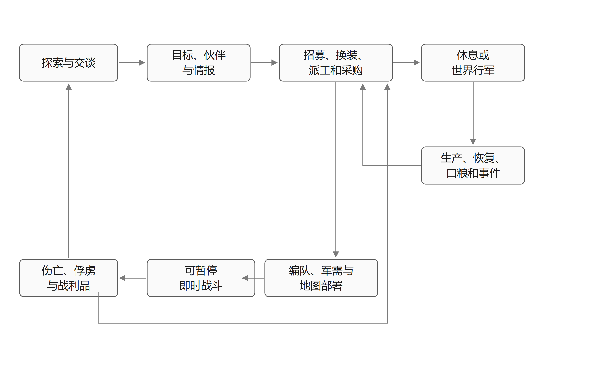
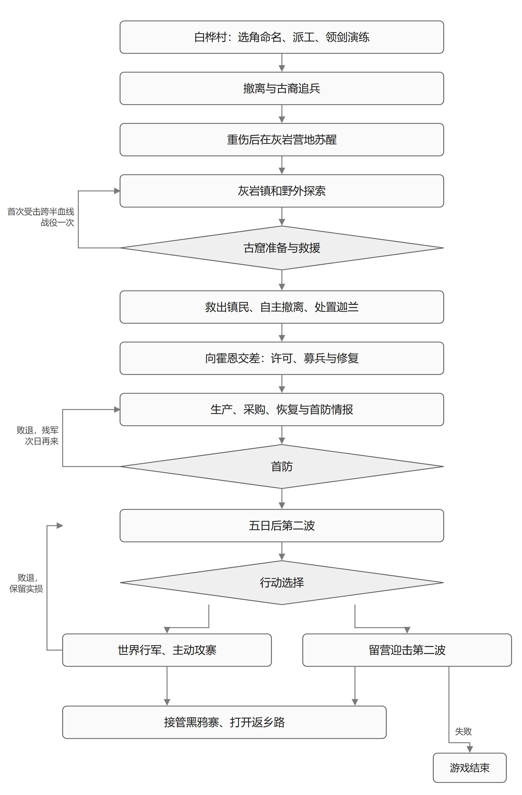

《断剑归途》游戏设计规格书
Windows／Android · 横屏 · 2026 年 11 月 23 日修订
文档信息
| 项目 | 说明 |
|---|---|
| 文档用途 | 定义 Demo 的内容范围、系统规则、流程关卡、数值、交互、表现、数据与验收规格 |
| 适用内容 | 从白桦村开场到返乡重建；包含已开放的重复副本、经营、战斗与局域网模拟对抗 |
| 数值基线 | 以现行 Unity Demo 的普通难度、新开战役和随包配置为基线。既有战役按有效存档所带快照计算。守营、网页原型与隔离试验分别标明条件 |
| 规则与内容分工 | 系统章定义通用行为，关卡章定义场景差异，数值章列参数与算例，界面章定义信息与操作。对应维护源见现行策划和实现差异 |
| 版本与验收 | 工程规则核对至 11 月 23 日的木桩教学批次。历史演算与后续工作见第12章，发行包以对应构建记录为准 |
目录
1. 产品定义 · 2. 故事人物与场景 · 3. 核心循环与设计目标
4. 系统功能规格 · 5. 数值与计算规格 · 6. 主线流程与关卡规格
7. 界面与输入规格 · 8. 文本与视听规格 · 9. 状态数据与保存规格
10. 制作分解与里程碑 · 11. 验收与迭代 · 12. 后续调整
1. 产品定义
1.1 产品概述
横屏俯视像素 RPG。玩家扮演曾任王都禁卫的主角，在村庄遇袭后带领幸存者立足，通过探索、伙伴养成、营地经营和小队战斗打通返乡道路，调查失踪搭档的线索。
探索由一名主角在场景中步行完成，战斗以至多三名队长为指挥入口，普通兵归属对应小队。士兵可出战或在据点工作，粮田空岗可用村民半工补益。经营按游戏日结算，战斗按连续时间推进并允许暂停。
1.2 玩家与体验目标
面向喜欢单人角色旅程、队伍培养、人员调配和小队战术的玩家。核心体验包括：
- 通过人物、地点和调查行为理解当前目标，自主决定探索与准备顺序。
- 在随行、管理、生产、恢复和出征之间分配有限人员。
- 根据敌情、地形和物资选择队伍，指挥或观察真实战斗。
- 用战后的资源、俘虏与经验改进下一次准备，并承担伤亡和消耗。
- 回到熟悉的白桦村，以调查和重建完成一段有明确起止的旅程。
1.3 平台与范围
| 项目 | 规格 |
|---|---|
| 平台 | Windows 键鼠；Android 横屏触控 |
| 模式 | 单人主线，支持暂停与存读档。灰岩营地兵营另提供两人局域网模拟对抗 |
| 视角 | 俯视2D像素，地图内自由步行，战斗使用细分格与连续移动 |
| 正常开局 | 主菜单开始新游戏，白桦村选角色、填写姓名 |
| 主线终点 | 返乡在原址修好家、粮田与工坊，同返村乡亲交谈后在长椅坐稳。断剑调查与增建兵营可选 |
| 可选活动 | 阿禾与阿铸招募、切磋、迦兰接纳、采购重铸、训练、土匪窝点、重复副本与扫荡 |
| 后续可达活动 | 已解锁交易、生产、训练、重复副本及主线完成后的周期流寇 |
| 场景规模 | 七张基础地图；地下回廊供两副本分别实例化，白桦村按序章与返乡切换状态 |
1.4 内容结构
本 Demo 以灰岩营地的经营与返乡主线为主体。接管黑鸦寨后开放返乡道路和对应战果。修复白桦村后可使用本地设施，两地共用库存，士兵、负责人、岗位与发展策略各自管理。
2. 故事人物与场景
2.1 故事前提与玩家动机
主角与搭档离开王都后，在白桦村隐居一年。清晨的派工和演练被异族来袭打断。搭档带民兵守西桥，玩家带乡亲往东撤；赶来的古裔追兵手持本应封存在王室武库的秘银剑，刺伤玩家后与同伴一同力竭倒下。
老周救回玩家，乡亲在断流滩的灰岩营地得到霍恩爵士的接济。玩家醒来时不知道搭档生死，回乡道路又被黑鸦寨封锁。向领主求助、救出镇民、获得建设和募兵许可，是安顿乡亲与组织返乡力量的实际路径。
击溃匪帮后，玩家回到被掠夺的白桦村。西桥头的断剑和向西的车辙留下调查方向。玩家在原址修理受损设施，同回到麦田边的乡亲继续安顿村庄。Demo 结束时，王室剑的来路和搭档去向仍未揭晓。
2.2 人物与势力
| 对象 | 身份及已知事实 | 功能与分支 |
|---|---|---|
| 主角 | 曾任王都禁卫，具侵蚀免疫身份；外观二选一，姓名由玩家填写 | 探索控制者、必需出战队长、任务物品持有人 |
| 搭档 | 另一位开场人物，与主角共同生活；西桥断后失踪 | 开场交谈、领剑、演练、离别及返乡调查目标 |
| 阿禾 | 老周与春婶的女儿，普通人弓手，擅长种植 | 可随行或留营；招募与任命粮田负责人分开执行 |
| 阿铸 | 巴隆之子，骑兵队长，具侵蚀免疫及锻造特长 | 原地比武、再次邀请、随行或工坊任职；入队后一次性赠礼 |
| 老周、春婶 | 白桦村幸存者，负责救援与照料 | 灰岩营地苏醒，说明救回过程、搭档失踪及求助方向 |
| 霍恩爵士 | 灰岩镇领主，接济幸存者 | 古窟委托和交付、募兵与营建许可、后续商队许可 |
| 老莫 | 行商 | 普通商品、物资与装备交易、免费首防消息、五日与十日付费军情 |
| 雷恩 | 募兵官 | 三职业逐人招募。首次成交后退出时介绍土匪窝点 |
| 巴隆 | 灰岩镇铁匠 | 装备交易、随行装备重铸、阿铸相关赠礼 |
| 陈安 | 灰岩营地斥候 | 来袭通知、封路说明、出征指引和第二波后的接管报告 |
| 迦兰 | 古裔，古窟首通控制来源 | 控制镇民；制伏后单独交涉，可接纳、暂缓或明确处死 |
| 巴图 | 黑鸦寨先遣头目 | 首防来袭，战死或逃离决定后续是否出现 |
| 大当家、豁牙 | 黑鸦寨主力队长 | 第二波及主动攻寨主要敌人 |
古裔是当前剧情中出现的异族。职业、阵营和人物身份分别定义，不能由贴图推断战斗职业。两名序章追兵使用迦兰系资源，但不是古窟中的同一人物。
2.3 地点及连接
| 地点 | 作用 | 连接与耗日 |
|---|---|---|
| 白桦村序章 | 日常、派工、演练、撤离与追兵战 | 剧情结束后在灰岩营地苏醒 |
| 灰岩营地（断流滩） | 营地经营、伙伴管理、休息和整备 | 东口到灰岩镇，西口到外围战场，均为当地切图。南口打开世界地图 |
| 灰岩镇 | 领主、铁匠、行商、募兵服务 | 与灰岩营地、野外遗迹入口当地往返，日期保持 |
| 野外遗迹入口 | 古窟入口、断壁与窝点发现 | 入口进入各自副本，战后返回对应门口 |
| 沉眠古窟 | 救援与重复挑战 | 独立地下回廊实例，有侵蚀 |
| 土匪窝点 | 可选普通副本 | 同类地下回廊实例，无侵蚀，与黑鸦寨分开 |
| 外围迎敌战场 | 工事、首防和第二波，共用可沿南坡或东坡登上的高台 | 与营地当地往返 |
| 黑鸦寨 | 独立匪帮据点，阻断归途 | 世界道路从灰岩营地到寨耗1日，寨到白桦村再耗1日 |
| 西桥头与返乡白桦村 | 可选拾取断剑、原址修复三处设施、与返村乡亲交谈并在长椅坐稳 | 接管黑鸦寨后可走世界道路，经白桦村东口抵达。村西口到西桥头当天往返 |
3. 核心循环与设计目标
3.1 核心循环

3.2 主要决策
| 决策 | 受影响的内容 |
|---|---|
| 带哪位伙伴，谁留营负责设施 | 技能、免疫、装备背包、对白、负责人产出 |
| 哪些普通兵工作或出征 | 口粮、在岗产能、可用战力、伤情和补员 |
| 扩军、换装还是提高军需档位 | 当前钱币与原料、每战消耗、长期角色实力 |
| 休息、采购还是直接出发 | 恢复和产出、库存、游戏日及来袭窗口 |
| 在哪里部署、选哪些队伍下令 | 接敌顺序、射界、骑兵空间、集火与驻守 |
| 追击巴图、主动攻寨或留营 | 后续敌阵、行军与准备时间、战场及返乡路线 |
3.3 设计目标与落点
| 目标 | 执行规则 | 玩家可见表现 |
|---|---|---|
| 经营与战斗互相影响 | 士兵可派工或出战，实际参战当日禁工，口粮、军需与伤亡回写 | 当天打过的士兵不能产出，其他合格人员可补岗。战利品和俘虏支持下一次准备 |
| 保留人物养成，控制士兵管理负担 | 队长个体成长，普通兵固定基础等级 | 伙伴有独立装备、技能、特性；普通兵主要按兵种与人数编队 |
| 保留不同指挥强度 | 暂停、手动指令与小队自主策略 | 可多选下令，也可空选观察自动战斗 |
| 让战场空间参与决策 | 高地、遮挡、细格占地和可破坏对象 | 选路、射界和展开位置影响交战 |
| 使准备有可规划的压力 | 日结、恢复、行军与来袭共用游戏日 | 情报和日历公开已知窗口，日期到达触发迎战 |
| 让选择进入后续内容 | 巴图死逃、两条接管路线、任务顺序与伙伴在场判断 | 敌阵、对白、入口与结算随真实结果变化 |
| 允许失利后的整备 | 倒地与阵亡分开，正式战损保留，首防可再袭 | 回营恢复、补员和重试有实际成本 |
4. 系统功能规格
本章按功能编号区分职责。每项以入口和前置、主流程、规则与数据、取消及失败、验收定义行为；共用数值在第5章，场景专用条件在第6章。
4.1 SYS-01 · 开局、探索与交互
| 规格项 | 内容 |
|---|---|
| 入口与前置 | 主菜单新游戏进入白桦村长椅；正式探索要求当前无拦截输入的模态窗口 |
| 主流程 | 点击主角候选→确认外观→填写姓名→确认→建立序章；探索中移动、面向人物或设施、执行交互；出口按实际连接切图 |
| 规则与数据 | 姓名去首尾空白，1～12个UTF-16字符；控制符、代理字符及路径等特殊字符拒绝。另一候选统一称搭档。近距离交互要求一般设施同层且距边缘1.5地格内，朝向取含两侧边界的前方180°。一般设施距边缘0.15地格内可贴身交互，人物贴身也要在前半圆内 |
| 移动与朝向 | 单方向输入即更新朝向和交互扇区，即使受阻也转身；实际斜向移动有横向分量时优先左右，停止保留朝向。碰撞和高差限制位移 |
| 取消与失败 | 姓名未确认不建首档；返回选角不推进。交互距离、朝向或状态不符时不触发业务；菜单和面板点击不穿透地图 |
| 验收 | 两种外观与自定义姓名正确；顶墙转身后能面向对象交互；实际切图恢复目标地点落点并自动保存 |
开放道路以朝向触发区外侧并踏入最外侧一行或一列细格为准。路牌可通过交互按钮通行，回程在路口内侧落地，面朝场内。粮田各边均可交互。随行队友距中心1.35地格，霍恩距中心2.25地格且可在相连台阶的上半段交谈。
危险野外和战场使用迷雾。浓雾遮住未探索区域，薄雾保留已探索地形。敌人只有处于当前视野时才显示。镜头持续跟随主角，贴近可玩区边缘时由外侧布景填充画面。
4.2 SYS-02 · 人员归属、随行与岗位
| 规格项 | 内容 |
|---|---|
| 入口与前置 | 人物交谈、设施负责人入口、兵营士兵名册与营帐队长名册 |
| 主流程 | 选择人物或兵员→形成岗位／随行草案→查看结果→确认时检查真实归属与容量→提交 |
| 规则与数据 | 队长保存独立身份、职业、生命、技能、特性、装备、任职、等级和去向。普通兵按兵种、血量、来源和所属队伍管理，总数据上限10000、单场最多24。随行含主角最多3名队长，营帐按等级有6／10／10个队长名额 |
| 资格 | 队长存活且未被另一外出队伍占用才可随行或出战。普通兵按生命至少30%判断工作、进攻和防守资格，工作另查当天参战记录、在营及岗位。存活的重伤士兵可随军调动 |
| 互斥 | 负责人须留营，加入随行释放原岗位。使用兵书升级保留原岗位。当天参战或生命低于30%本身不排除已招募且存活队长的本地管理资格。普通兵离营从岗位移走，同一人员不同时占多个队伍 |
| 取消与失败 | 草案取消保留原岗位；满员时保留原编制。共用士兵名册保留编号和生命，另列岗位、生产或编队。异地士兵标明驻地，在途士兵显示调动方向 |
| 验收 | 同一人物不会同时负责人和随行；调工取消零变化；返营者按原来源和真实存活结果归还 |
阿禾、阿铸接受剧情邀请后加入营地，可超过营帐容量。具名迦兰与普通招降队长仍检查营帐空位。同行受随行上限和行动资格限制。也可请随行伙伴留在当前场景，再次交谈邀请，离开地图后等候者回营。任职与随行分开选择。生产设施可点名调换岗位，数量加号只取闲置士兵。满岗可先在草案移出一人，再调入另一人，整批确认。
两处都有可用兵营时，可从兵营详情下达跨地调令。确认即按人员及路程预扣路粮，士兵离开原岗，行程一日，在途不能工作或出战。当天撤销退还路粮，恢复原地资格并按当地策略分配。异地队长派往另一据点任职时次日到达，随行队长在当前据点退队任职时可直接就任。
非剧情队长可从营帐请离。主角、剧情保护、外出人物受相应限制。请离时装备和背包转仓，普通兵保留，容量不满足则整笔拒绝。
4.3 SYS-03 · 设施、生产、休息与日结
| 规格项 | 内容 |
|---|---|
| 入口与前置 | 靠近粮田、工坊、兵营、营帐或修好的家、仓库与已解锁的本地商队设施 |
| 主流程 | 查看岗位与预估→安排负责人及工人→确认→在营帐查看缺口→休息或世界行军推进日程 |
| 规则与数据 | 粮田产粮，工坊消耗原料产军需，营帐管容量和恢复。按参战日、在营、生命与岗位资格计产，负责人按特性加成。小数粮食和工作量结转 |
| 分配策略 | 营帐或修好的家可切换手动、粮田优先、工坊优先。两地各自安排本地合格士兵。自动策略先填优先设施，原料不足以开工时略过工坊。手动调岗确认时仅当前据点转为手动 |
| 取消与失败 | 未确认岗位不改真实人员。修复和升级在材料、许可或现场条件不足时不扣资源。到期入侵先处理，不能用休息跳过 |
| 验收 | 同样岗位的预估与正式日结一致；原料不足限制工坊产出；读档和重复打开预览不多结一天 |
粮田初始6岗，每名合格普通兵基础日产粮4。工坊修复后有6岗，每名合格普通兵基础日产工作量1。一级军需每件用1工作量和2原料，二级每件用2工作量和4原料。工坊和兵营修复各耗原料10、钱币20，需对应营建许可。
灰岩营地和修好设施后的白桦村，各有两份粮田半工补益。当地合格士兵先占岗位，每个空岗可补一份半工，上限两份。补益只计入粮田产出，岗位人数和名册按实际士兵记录。工坊使用实际工人产量。
粮田外观读取日结预估的粮食净变化。预估库存减少时显示未成熟麦苗，持平或增加时显示成熟麦田。该预估与资源栏使用同一计算入口。返乡未修粮田采用受损外观。
灰岩营地建设在首防后取得霍恩许可，再由老周开放地图布置。在地图摆放与移动设施，底栏合计整批成本，确认合法布局才一次扣费。移动已有设施免费，取消只清草案。返乡修理与后续增建按第6.10节执行。
修复正式工坊后，可在「工坊 · 1级」标题右侧用方形加号付原料10、钱币20升为2级。升级保留现有岗位容量、配方和进度，不需等首防后的额外许可。两地共用工坊等级和生产档位。二级开放后可在两档间切换，分别保留各配方已有进度。未解锁时切换禁用并显示原因。
日结顺序固定为：
- 根据真实岗位及当日资格分配，计算预估。
- 结算旧日粮食和工坊工作量，扣除实际用料并保存各配方余数。
- 恢复符合条件的人员生命。
- 日期加一，刷新供货、体力、威胁和来袭事件。
- 支付新日口粮，按全份分粮处理离队和抵达，随后重新分岗。跨地调动、行军的路粮已在发令时预扣。
- 结算本地跑商，生成日报，触发相应剧情及保存。
实际参战普通兵以固定编号记录日期。主动战、防守和扫荡按实际名单禁工，未落位、取消、纯行军与演武不计。治疗、返营、换岗和存读档不清除当日记录，次日重新判断资格。同日可按场次和生命再战。缺粮按存档种子、日期与士兵编号随机排队分配，每人先领足一份，未分足者离队。预估与实际日结使用同样规则，留队单位的产出和攻击系数保持原值。
4.4 SYS-04 · 装备、个人背包与共享仓库
| 规格项 | 内容 |
|---|---|
| 入口与前置 | 人物背包、仓库现场交互、商店中的收货角色卡；只操作当前可访问物品 |
| 主流程 | 点物品格打开就近小窗；选择装备、卸下、移动、拆分、转移或拖放；提交前验证实例、目标和数量 |
| 规则与数据 | 每位队长20格，5列4排；装备有唯一实例，消耗品按目录堆叠。装备槽为武器、头盔、护甲和饰品，主角与序章搭档有三个饰品槽，其余两个 |
| 穿戴 | 武器按剑、弓、枪匹配职业。换装先算裸属性、品质和增益，再检查位置与射程。提高生命上限不自动治疗，降低上限时当前生命截到新上限 |
| 整理与转移 | 同容器先并同类堆，再按类别、名称、品质降序和实例顺序整理。目标为空则移动，可堆叠则合并；交换要双向允许 |
| 取消与失败 | 任务物品、绑定物、穿戴物受各自保护。任务物品领取时交给主角。容量不足时显示「背包已满」，保留真实物品位置及领取资格 |
| 验收 | 整理不脱装备；跨容器和满格失败不复制或丢失物品；购买指定收货与奖励溢出使用各自规则 |
品质由低至高为破损、较差、一般、良好、极佳、传奇。王室秘银长剑是任务证物；序章旧剑保留本局青绳描述。仓库可视格数不作为总数据容量。容量估算包含空格及可堆叠余量。拾取、购买、任务赠礼、领奖和取仓都先检查目标背包，整份主动领取物品能放下才提交。战场个人掉落装不下时留在战果清单，整理后可再领。
4.5 SYS-05 · 交易、募兵、情报与重铸
| 规格项 | 内容 |
|---|---|
| 入口与前置 | 老莫、巴隆和雷恩的已解锁对白业务选项；募兵需领主许可，重铸需当前可访问装备和随身锻造石 |
| 交易流程 | 点货架买入或点背包物品出售→查看价格、数量、库存和收货人→确认时重新检查→统一增减资源与物品 |
| 指定收货 | 个人装备交给右侧选中的可用随行队长；满包拒绝整笔购买，玩家可切换收货人。公共物资进入共享库存 |
| 募兵流程 | 按职业逐人购买；每成交一人即增加对应兵员、减少兵源和钱币，并按新总人数重报价。首次成功购兵登记线索，退出募兵页时播放一次窝点介绍 |
| 情报流程 | 老莫拦路先经对白进入免费消息页，暂离后可补领。五日军情公布日期，十日军情同时列各波队长及四职业人数。同日重看已购快照免费 |
| 重铸流程 | 选择随行背包或已穿戴的武器、护具→选1～10石→看升降概率和属性比较→确认一次结果 |
| 取消与失败 | 价格、库存、资格或空位失效时不扣钱、不换货。重铸排除饰品、保护物品、传奇及品质变化不影响属性的装备；材料不足不执行 |
| 验收 | 每次购买重报价；满包指定收货零扣款；重复确认不重复成交；重铸只消耗一次石头且最多变动一个品质档 |
未解锁业务不生成灰色对白选项。锻造石位于普通商品中，不单设业务页。重铸仅在灰岩镇铁匠处，营地工坊生产军需。重铸不另扣金币，结果由本局种子、日期、实例和操作序号确定，返回预览不能刷新同一次结果。阿铸入营后可向巴隆接重铸教学，领取试用石、实际重铸后交付一次。
4.6 SYS-06 · 队长成长、技能与特性
| 规格项 | 内容 |
|---|---|
| 入口与前置 | 角色详情、装备页、营帐升级和战斗技能按钮；队长须满足当前位置、生命和占用条件 |
| 成长流程 | 在营帐选择队长，查看下一级所需职业兵书。确认后扣书，当场升级并重算属性 |
| 成长范围 | 普通兵固定一级，队长接口支持1至9级。基础兵书可由副本取得或在首防后购买。老周训练任务接取时按本人下一等级发足职业兵书，完成回报后再发足升下一级的用量 |
| 技能 | 每队长一个主动技能；开场预备3秒，效果、持续和冷却按第5章。倒地、撤退、冷却未到或有效技能尚在作用时不重复施放 |
| 特性 | 通用随机队长生成0～3项，按权重、范围和步长取得，同互斥组不并存。剧情人物用固定技能和特性 |
| 取消与失败 | 兵书不足时无法升级。升级和换装不凭空补满生命。详情查看不改变技能、特性或随机结果 |
| 验收 | 开训离岗并扣正确书数；到日完成；随机实例招募后保留原属性与特性；暂停时技能时间不推进 |
主角使用鼓舞，阿禾使用连射与种植专精，阿铸使用突进与锻造专精。鼓舞、行军、治愈在施放时固定本队存活受益者，后加入者不追补该次效果。横扫逐目标检定并检查合法目标及视线，治愈不复活已失能单位。
4.7 SYS-07 · 编队、军需与实地部署
| 规格项 | 内容 |
|---|---|
| 入口与前置 | 古窟、窝点、首防、第二波、黑鸦寨在真实入口进入正式备战。主角必须参战且实际落格，单场最多3队长、24普通兵。世界行军使用同模板另选同行人员，抵达后再部署 |
| 备战流程 | 选队长→按四职业人数或名册点名分兵→看实际来敌与双方对算参考战力、现状和预计减产→选择一档军需→进入真实战场。行军界面单列路粮扣前扣后，正式敌阵到场后查看 |
| 候选与预设 | 攻防取本地可行动队长及生命至少30%的普通兵，攻寨用黑鸦寨实际抵达人员。兵营按A、B、C位次保存默认职业人数、策略和范围，换队长继承位次。备战草案只记录本场名单，实际驻地随人员调动 |
| 军需规则 | 一场只能选一个档位。有普通兵则每人配一件，纯队长需求0。备战按选中人数预检，部署和开战按实际落位人数检查 |
| 部署流程 | 默认准备顺位首位队长。队长落位后依剑士、弓兵、骑兵、法师再下一队连续放置。可点格、拖划、一键布置、撤回和取消选择 |
| 占位规则 | 在己方部署区且可通行。剑、弓、骑、法均占一细格。士兵须有所属已落位队长，撤回队长连同其已摆部属撤回 |
| 返回与取消 | 返回备战保留编队、军需及有效落点；一键撤销只清落点；退出整套备战或读档清草案，资源和原岗位保持 |
| 提交与验收 | 最终复查人员、场景、位置和库存→写战前档→一次提交实际名单、落点和军需配额。重复确认不得生成第二场；未上场者不计本战战损与消耗 |
军需可用量为库存减锁定量。开战时按实际普通兵人数锁定配额，库存总量暂不扣；正式战斗结束按上场人数全额扣该档配额，生还与死亡均计耗用。胜、负及撤退使用同一口径。
一键布置保留有效现有落点，先补队长，再优先在所属队长附近补士兵；放不下的保持未部署。PC 从部署格起手拖划布兵、从已落位单位起手拖动换位、从区外空地起手左拖平移。
4.8 SYS-08 · 即时指挥、AI与战斗结束
| 规格项 | 内容 |
|---|---|
| 入口与前置 | 已通过部署确认的正式战斗；演练、比武使用同一操作框架及各自结算条件 |
| 选择 | 正式开战默认选中全部可操控队长和所属小队，各队沿用原策略。点头像、滑选或快捷键改选，也可空选观察格子。默认预选不代替教学选人 |
| 指令 | 移动、集火、驻守；单人命令直接校验，多队移动及驻守按A→B→C分配合法落点，所有队都有结果才统一提交 |
| 策略 | 手动执行直接命令并原地攻击合法目标；进攻主动搜敌；防守围绕锚点响应。策略键只作用于选中可行动队长，切换清除旧移动、集火和驻守 |
| 士兵行为 | 围绕本队长、指挥范围和当前队伍目标行动；超出范围先归队。队长交战时协助。无敌队长的窝点普通兵启用自主接敌 |
| 暂停 | 玩家暂停冻结移动、攻击、冷却与侵蚀。对白和详情结束恢复打开前状态；系统菜单关闭保持暂停，等待玩家继续 |
| 取消与失败 | 目标失效释放临时指令。多人无足够空间时全组保持原命令。倒地队长不能被下令；不可见敌人不给精确点击目标 |
| 验收 | 多队落点不重叠，骑兵按一细格检查。双击或触屏长按驻守成功显示黄框。同一场次只提交一次。首防追击未完成时，被贴身牵制的敌人可按规则反击 |
普通AI约每0.3秒重选目标，按距离／目标权重升序，同值按单位序；远程优先考虑已在射程且有视线的目标。嘲讽与小透明分别改变目标权重。进攻探索、巡逻与手动交战记忆使用各自的计时，不按画面帧数决定行为。
多队移动和驻守在点击点周围4地格内寻找候选。首队优先点击格，后续按距点击点的距离、路径成本和格序选择。未选单位的占地和已预约的落点均须避让，所有队成功后一次提交。
攻击前摇结束时固定目标、攻击参数、骰值和弹道目的地。远程按到达时点结算，目标倒地或离场后不换打其他目标。法师普攻命中造成伤害时，按主击基准分给目标周围八个细格，每格原始份额为1/8，可由地形阻断。普通剑士在近战半径内可贴身锁定一名可见、无遮挡的普通敌兵。被锁者完成当前一步后停步，仍可出手。首防追击中的适用条件见第6.7节。
有主场规则的战役中，营地守防我方拥有全场视野，主动攻寨由守寨方获得。射击仍检查视野、距离、高低和遮挡。有撤离出口的普通生死战中，队长先走到出口，所属士兵再撤，其他小队继续作战。古窟和窝点锁胜后走出口。首防结束追击或击败来敌、第二波守胜和攻寨获胜时当场显示战报。演练、切磋、追兵及第二波没有普通撤离出口。
4.9 SYS-09 · 战果、俘虏、奖励和副本
| 规格项 | 内容 |
|---|---|
| 入口与前置 | 一场正式战斗或扫荡已经得到结果；同一场次只结算一次 |
| 主流程 | 回写实际参战者生命、死亡及当日参战记录→结算军需→形成资源、物品及俘虏结果→处理需选择的项目→回到该场规定地点 |
| 生死 | 普通兵按实战规模曲线判定即死，我方队长保留恢复空间。古窟首通迦兰保留，首防巴图和攻寨队长沿用剧情结果。扫荡使用自身伤损模型 |
| 俘虏 | 实战和扫荡的本场普通俘虏须全部招募、释放或处决后结束。招降检查容量与剧情资格，保留职业、配置和实际生命。容量不足可释放或处决。旧档待处理者继续保留。古窟首通迦兰在洞外按剧情处置 |
| 自动奖励 | 战后粮食、原料、钱币直接到账。可容纳的个人物品进入随行背包；满包时保留未领取的战场掉落。奖励收据列数量和去向 |
| 副本领奖 | 古窟与窝点各记首胜和本场资格，共用体力。古窟首通只救人，窝点首通免费领奖；重复胜利领取一次消耗20，体力不足仍可战斗但不能领取该次付费奖励 |
| 扫荡 | 本副本首胜、前次战果处理完、己方战力严格大于敌方1.5倍；复用当前编队与单档军需，确认后结算伤损及侵蚀，不手摆、不跨日 |
| 取消与验收 | 取消扫荡不耗资源。重复对白、重开小窗、读档不重复发奖或扣体力。古窟首胜接救人、撤离和洞外对白；演练比武直接接结果对白 |
副本基础奖励为钱币15、随机新手装备1、锻造石1。基础兵书有50%概率掉落，从剑、弓、骑三职业抽取。窝点首胜另加钱币60、粮食20、原料10。领主交差奖励单独计入。开始新的实战前按入口处理上次待领奖资格。
4.10 SYS-10 · 任务、日历、情报与事件
| 规格项 | 内容 |
|---|---|
| 入口与前置 | 已触发的主线、已解锁支线、任务册、日期资源明细与人物报告 |
| 主流程 | 真实操作或事件更新目标→短提示及箭头同步→条件完成时推进→人物对白承接下一行动 |
| 追踪 | 默认主线；任务册可选已解锁支线，完成或取消回主线。每次只显示一条短提示及一个有效箭头 |
| 跨图 | 目标在别图先指当前正确出口；面板内指实际操作按钮。等待事件显示条件，不指无效按钮 |
| 日历 | 每季度15天，可回看第1季度、前看至下一季度。仅显示已发生或已知事件，精确情报和粗略范围分别表达 |
| 来袭 | 古窟交差确定首防日期为max(6，交付日+3)。首防胜利及巴图对白后，第二波默认五日后。袭击抵达且仍待处理时拦截主动休息和耗日行军，领地内探索可在当日继续 |
| 取消与验收 | 派工取消、预览、重复确认不完成任务。未解锁对白选项隐藏；已解锁但暂不可用时给具体原因。免费消息可补领，同日付费消息不重抽 |
主线重建完成后开启周期流寇，首波延后4日，后续间隔4～8日。排期时抽定配型，传闻和日历读取同一事件；总兵力随波次每次增加12%，最高2.2倍，再施加±15%扰动。配型混合、马匪、弓匪、刀匪权重为55／20／15／10。
4.11 SYS-11 · 世界行军、接管与本地商队
| 规格项 | 内容 |
|---|---|
| 入口与前置 | 首防战果及巴图对白结束后，从营地南口打开世界地图。目的地和道路已经开放，人员未被其他队伍占用 |
| 出征流程 | 查看世界地图→选目的地→整备并显式选兵→确认出发、一次预扣路粮→逐日行军。到场以实际抵达人员备战。未选士兵留原驻地，存活伤兵可调动并按同样路粮计费 |
| 道路 | 灰岩营地到黑鸦寨1日，寨到白桦村1日；白桦村与西桥头当天往返。寨内两扇门打开世界地图 |
| 入侵交会 | 第二波尚未抵达时出发，恰在来袭日抵达黑鸦寨可按途中截住规则取消对应入侵。第二波已抵营则拦截耗日行军，直到战斗处理完。攻寨胜利也取消第二波 |
| 接管 | 主动攻寨胜利接管。第二波胜利后陈安报告残兵逃散并接管，可以直接选择返乡路线，也可去空寨搜一次余资 |
| 本地商队 | 领许可并建成商队设施后至少安排1人，按每兵三日6粮一次预扣，包含口粮与路粮。整趟完成后每兵结算12钱币。粮足可自动续程，粮不足停程。召回退还余粮、本趟不计收益 |
| 返回与失败 | 已走行程、伤亡和耗用保留。回灰岩营地或白桦村时，实际同行者在当地驻扎。跨据点抵达释放原岗位锁定，回原址可恢复原岗位意向 |
| 验收 | 未到达人员不在寨前候选中；同日拦截不双开战场；第二波胜后不重打空寨；余资及人员返回只执行一次 |
在途普通兵仍参加日初口粮分配，预扣路粮是额外开支。已经付粮的本地商队从随车粮支取，岗位占用与出征队分别管理。远途运输与副手代打保留开发入口或旧档兼容，正式试玩由玩家处理袭击。
4.12 SYS-12 · 存档、设置与会话退出
| 规格项 | 内容 |
|---|---|
| 入口与前置 | 主菜单继续、手动存读、自动保存、系统菜单；正式进度以姓名和当前版本区分 |
| 槽位 | 3个手动槽、6个循环自动槽；自动优先空槽，否则替换修改时间最旧者。手动覆盖先确认并留备份 |
| 自动时点 | 姓名确认后首存。完整过日、指定剧情与奖励完成后保存，正式开战前写战前状态，实际进入非战斗地图及战后返回时写新地点。长椅入座动画完成后也写一次 |
| 读取 | 继续选择最近有效非战中档。手动读档可选指定有效槽。恢复人员、物品、岗位、剧情、地点、日期、日账和该档数值。读档清除未提交备战草案 |
| 退出 | 回主菜单或退出游戏直接丢弃未保存会话，不检查本场战果、不结算、不另写档。取消退出保留当前进度 |
| 失败处理 | 主档损坏且有效备份存在时，读档页才提供恢复。版本不符、备份无效或载入失败时保留当前会话。当前 Demo 保存版本为21，可用旧档经兼容检查后读取并保留该档数值 |
| 设置 | 简单、普通、困难。和平格线、战斗格线、角色范围与战斗线条可独立开关，保存本机。字号按布局，画布整体缩放。开发测试入口与正式新局分开 |
| 验收 | 战中退出后读到磁盘战前档；取消部署不另存；切图档位置正确；同名物品与人物按身份恢复而非名称重建 |
长椅两端各可使用。坐稳时只写一个轮换自动档，提前起身或持续停留不会另写，读档恢复到椅前通行处。手动槽从菜单管理。打开菜单、普通经营修改与单纯读档不单独触发自动档。正式运行资源及关卡数值进入新局快照。
4.13 SYS-13 · 局域网模拟对抗
| 规格项 | 内容 |
|---|---|
| 入口与前置 | 灰岩营地兵营的「模拟对抗」。同一局域网内两台设备可开房、查找房间或按局域网地址加入 |
| 准备 | 各自复制本地队长、士兵与军需配置，独立编队、部署。双方都就绪才开战 |
| 指挥与信息 | 中立战场以一倍速运行，房主设备统一裁定战斗。双方分别控制本队，按己方阵营的实时视野获取敌情。沿用剑士贴身锁定及法师普攻溅射 |
| 暂停与继续 | 双方都请求暂停才停表，任意一方继续后共同倒数三秒 |
| 胜负 | 一方全体队长失能时判负。双方同一步失能或打满五分钟时判平 |
| 退出与写回 | 结算后各自回到营地，中途离开或断开即结束。演武中的伤亡、技能与军需消耗只计本场。回营保留原人员、库存、日期、任务及自动档 |
5. 数值与计算规格
5.1 单位与精度
| 量 | 单位和处理 |
|---|---|
| 地形与场景坐标 | 地格；每地格细分2×2细格 |
| 角色移动、射程和占地 | 细格、细格／秒；1地格等于2细格距离 |
| 经营日结、耗日的世界行军 | 游戏日；普通当地步行和切图不耗日 |
| 战斗、技能和侵蚀 | 模型秒；暂停冻结，倍速只改变推进速度 |
| 人数、物品数、价格、日期 | 整数；价格和兵源按指定方向取整 |
| 生命、冷却、位置、工作进度 | 浮点；只在明确结算边界取整 |
| 概率 | 本章用百分比或0～1比例，重铸底层可用万分点，计算时不混用 |
5.2 初始资源、设施与人口
| 参数 | 当前值 |
|---|---|
| 灰岩营地初始库存 | 粮食240、原料80、钱币1000、一级军需6、二级军需2 |
| 营地首日口粮 | 仅有主角，首日口粮0，顶栏粮食240 |
| 队长日口粮 | 主角与其他队长均为0，随行、留营及外出一致 |
| 普通兵日口粮 | 剑、弓、骑、法各1粮，在途仍计。跨地调动和大地图行军另按每兵每天1份预扣路粮。本地商队按三日6粮从随车粮支取 |
| 补岗村民 | 灰岩营地2人，白桦村三处设施修复、乡亲到田边后另有2人。每人半份普通兵基础工作量，无人口口粮 |
| 随行／单场人数 | 随行队长最多3；单场普通兵最多24 |
| 营帐容量 | 1／2／3级分别可容纳6／10／10名队长。三级提升营内每日恢复 |
| 营帐升级 | 1→2耗原料20、钱币60；2→3耗原料40、钱币150 |
| 粮田基础 | 6岗，每名合格普通兵每日4粮 |
| 工坊基础 | 修复后6岗，每名合格普通兵每日1工作量 |
| 一级／二级生产 | 每件工作量1／2，原料2／4。工坊修复后可花原料10、钱币20升到2级，岗位不加，开放二级配方 |
| 设施修理与增建兵营 | 采用通用修理价格，默认每处原料10、钱币20。适用于灰岩营地工坊与兵营、返乡原址三处修理及返乡兵营增建 |
| 本地商队设施 | 按现有许可开放，耗原料12、岗位3 |
| 营帐日恢复 | 1／2／3级：最大生命的30%／40%／50%，不超过上限 |
5.3 四职业裸装模板、变体与成长
| 身份 | 职业 | 1级生命 | 1级攻击 | 1级防御 |
|---|---|---|---|---|
| 普通兵 | 剑士 | 100 | 12 | 6 |
| 普通兵 | 弓兵 | 75 | 14 | 2 |
| 普通兵 | 骑兵 | 100 | 10 | 3 |
| 普通兵 | 法师 | 60 | 9 | 1 |
| 普通队长 | 剑士 | 175 | 14 | 7 |
| 普通队长 | 弓兵 | 150 | 17 | 3 |
| 普通队长 | 骑兵 | 165 | 12 | 4 |
| 普通队长 | 法师 | 132 | 12 | 2 |
| 异能队长 | 剑士 | 235 | 15 | 8 |
| 异能队长 | 弓兵 | 226 | 18 | 4 |
| 异能队长 | 骑兵 | 223 | 13 | 5 |
| 异能队长 | 法师 | 216 | 13 | 3 |
| 职业 | 命中点 | 闪避点 | 射程（细格） | 移速（细格／秒） | 占地 |
|---|---|---|---|---|---|
| 剑士 | 9 | 1 | 1 | 4 | 1细格 |
| 弓兵 | 7 | 0 | 12 | 3 | 1细格 |
| 骑兵 | 8 | 3 | 2 | 6 | 1细格 |
| 法师 | 7 | 0 | 6 | 3 | 1细格 |
黑鸦寨有法师变体（生命82、攻击17、防御3），第二波引用重甲精锐变体（生命175、攻击12、防御8）。两者按关卡槽位读取，不覆盖同职业默认模板。雷恩仍逐人招募剑、弓、骑，普通法师可在古窟重战中俘获招降。
队长裸生命、攻击、防御分别乘等级成长，再叠装备。2级倍率依次为1.18、1.04、1.02，9级为6、1.32、1.16。1→2消耗2本对应职业基础兵书，确认后立即升至2级。2→3需4本对应职业高阶兵书。老周任务的接取与回报分别提供一轮所需兵书，旧进度的可补领条件按关卡执行。
5.4 六项主动技能
| 技能 | 职业 | 效果 | 持续 | 冷却 | 自动触发条件 |
|---|---|---|---|---|---|
| 鼓舞 | 通用 | 本队攻击+30% | 4秒 | 15秒 | 本队有有效攻击目标 |
| 行军 | 通用 | 本队移速+2细格／秒，免地形减速 | 3秒 | 15秒 | 本队有人移动 |
| 治愈 | 通用 | 每秒恢复30生命，共3次 | 3秒 | 15秒 | 本队存活者生命低于70% |
| 横扫 | 剑士 | 半径4细格内逐合法目标以1.2倍攻击检定 | 瞬时 | 10秒 | 有合法攻击目标和视线 |
| 突进 | 骑兵 | 本人移速+50%，下一击1.5倍攻击 | 至多5秒 | 15秒 | 有有效攻击目标 |
| 连射 | 弓兵 | 本人攻速+50% | 5秒 | 15秒 | 有有效攻击目标 |
开场预备均为3秒。突进的下一击耗用或持续结束后开始冷却。自动施放服从人物设置和当前命令，不能抢占尚未完成的直接命令或攻击前摇；玩家主动操作使用队长技能按钮。
5.5 二十一项特性
随机人物每项数值以步长1取得，下表固定倍数和固定层数除外。相同组不能同时抽中；权重除卷王、神农、神匠为0.25、优势在我为0.1外，其余为1。
| 特性 | 取值 | 互斥组 | 应用 |
|---|---|---|---|
| 勤劳／卷王 | 1～10%／11～20% | 通用工作 | 负责人通用生产加成 |
| 种植专精／神农 | 1～15%／16～25% | 种植 | 粮田负责人加成 |
| 锻造专精／神匠 | 1～15%／16～25% | 锻造 | 工坊负责人加成 |
| 乱武 | 1～25% | 攻速 | 进入攻击间隔分母 |
| 坚韧／脆骨 | 1～25% | 承伤 | 最终承伤分别乘1−值／1+值 |
| 优势在我／我不行了 | 固定1层 | 骰子 | 分别增加优势／劣势来源 |
| 嘲讽／小透明 | 2倍／0.5倍 | 索敌 | 调整远程目标权重 |
| 商人／坏脾气 | 1～10% | 交易 | 随行同类取最高，正负相抵后修正买卖价 |
| 急性子／慢性子 | 1～15% | 移动 | 提高／降低本人移速，不自动改变世界道路天数 |
| 鉴宝 | 1～5% | 掉落 | 在场存活随行者合计，按品质池规则转移一般品质权重到较高品质 |
| 酒鬼 | 固定2倍 | 饮酒 | 酒类增益的额外部分翻倍 |
| 仁慈／凶残 | 1～10个百分点 | 生死 | 最后一击所属队长修正即死率；固定剧情结果优先 |
5.6 装备、品质与重铸
下表为一般品质的定义增量。旧制短剑、基础弓、基础枪、基础头盔和基础布甲的属性增量为0。法师基础法杖提供2点攻击，其余增量为0。武器提供职业匹配的使用形态。
| 装备 | 攻击 | 防御 | 生命 | 暴击倍率附加 | 移动附加 |
|---|---|---|---|---|---|
| 新手短剑 | 6 | 0 | 0 | 0.1 | 0 |
| 新手弓 | 5 | 0 | 0 | 0.1 | 0 |
| 新手长枪 | 7 | 0 | 0 | 0.1 | 0 |
| 新手轻盔 | 1 | 1 | 5 | 0 | 0.1 |
| 新手轻甲 | 2 | 2 | 10 | 0 | 0.2 |
| 新手重盔 | −1 | 2 | 10 | 0 | −0.1 |
| 新手重甲 | −3 | 4 | 20 | 0 | −0.3 |
| 队长赠予饰品 | 0 | 1 | 5 | 0 | 0 |
| 基础法杖 | 2 | 0 | 0 | 0 | 0 |
| 品质 | 破损 | 较差 | 一般 | 良好 | 极佳 | 传奇 |
|---|---|---|---|---|---|---|
| 属性系数 | 0.5 | 0.75 | 1 | 1.25 | 1.5 | 2 |
| 价值系数 | 0.5 | 0.75 | 1 | 1.3 | 1.8 | 2.5 |
| 基础掉落权重 | 5% | 10% | 50% | 20% | 10% | 5% |
攻击、防御、生命、暴击倍率附加和移速附加的正值乘品质系数，负值除以品质系数。武器攻击、其他装备攻击、生命、防御当前附加缩放均为1。品质4／5的弓另增加1／2细格射程。
轻盔与轻甲成套追加攻击2；重盔与重甲成套追加生命10、防御1。任一完整护具套装搭配新手武器，再追加攻击2、生命10。套装增量按相应属性附加缩放处理，当前缩放为1，展示时比较全身组合。
烈酒当天提高队长及部属攻击，基准10%；清酒对该队下一场正式战斗生效，基准5%。两种酒互斥，酒鬼修正额外增益，日期和场次负责消耗效果。
| 石数 | 升一档 | 保持 | 降一档 |
|---|---|---|---|
| 1 | 20% | 55% | 25% |
| 3 | 35% | 50% | 15% |
| 5 | 50% | 40% | 10% |
| 10 | 70% | 25% | 5% |
2／4／6～9石在相邻锚点间做整数万分点线性插值；最低品质的降档份额并入保持。传奇、保护装备或各品质有效属性相同的物品拒绝重铸。
5.7 攻击检定与伤害
- 优势与劣势按来源数相抵。净优势掷两次D10取大，净劣势取小，相等掷一次。
- 最终点数1必失，10必中且暴击；其余满足
骰值＋命中点 ≥ 11＋闪避点才命中。 - 基础暴击倍率1.5，叠装备和效果。普通命中倍率为1。
- 剑士、弓兵、骑兵普攻使用物理伤害，取
max(1，max(1，攻击−有效防御)×本次暴击倍率×适用修正)。 - 法师普攻使用法术伤害，取
攻击×本次暴击倍率×[1−0.8×有效防御/(有效防御+8×攻击方等级)]×适用修正。有伤害的技能按技能自己的伤害类型。命中后应用难度、承伤和剧情伤害保护。 攻击间隔 = 1秒/(1+乱武比例+连射等攻速修正)。低于0.2秒的配置无效，攻击间隔同时作为前摇，无第二个独立冷却。
特性、高低差和攻击距离共同参与D10。骑兵在沼泽出手计一项劣势，普攻超过第一细格另计一项劣势。物理弓箭打移动骑兵、受有效近战贴身威胁分别计劣势。远程弹道当前14细格／秒，出手保存骰面和攻击快照，到达按原目标有效性结算。树石和侵蚀不套命中骰。
| 难度 | 我方造成伤害 | 我方受到伤害 |
|---|---|---|
| 简单 | ×2 | ×0.5 |
| 普通 | ×1 | ×1 |
| 困难 | ×1 | ×2 |
5.8 地形、视野与工事
每个在场且能行动的队长与普通兵分别观察。阵营视野取其并集，失去最后一名可观察该目标的单位后，地形保留探索记录，敌单位隐去。
模板基础视野为1～32地格，填0时按战场默认值。高度场景默认基础10地格，按高程0～3每级增加2地格，半径至多32。中立演武默认基础6地格。眼线从地表上方1.5高度检查墙体和建筑，遮挡时无法直接射击。
使用高度战斗时，弓兵与法师对低处增加min(6，max(0，施击者高度−目标高度)×2)细格射程，最多增加3地格。实际高差达到一整层时才计下射优势或仰射劣势，步行能否上坡单独检查。
四职业均以脚下的一细格判占位，骑兵可在合法条件下顶开，被剑士贴身锁定时不能主动顶人。沼泽和沙袋参与移动代价。枯树和巨石按实际通行及射线处理。首防与第二波共用可从南、东两坡登上的高台，见第6.7节。
| 工事 | 放置与费用 | 效果 |
|---|---|---|
| 隐藏陷阱 | 非战斗迎敌场；平地、无设施单位和其他工事、非部署区；单格原料4，最多10 | 敌人踩中损失最大生命30%，一次消失；己方无效，战斗中隐藏陷阱外观 |
| 沙袋 | 相邻横向三地格为一组，整组原料2；同样检查合法空地 | 对敌我及骑兵按沼泽档减速，不挡路、不挡弹；行军技能可免减速；整组拆除不返料 |
5.9 即死率、兵源和招募价
四职业各提供4点基准，普通兵规模基准B=16。实战原始率为：
raw = 0.5−1.5×(B−N)/(B+N)。B+N为0时使用0.5。
实战N为开战全军普通兵数，减去本场我方永久阵亡普通兵，加上本场已完成判定且仍倒地存活的敌普通兵。现受判定对象和队长不计入N。最后一击所属队长的凶残、仁慈差额先加到raw，再将最终概率截断到0～1。固定剧情结果优先。敌方非固定剧情队长依自身配置判定。招募和日初兵源分别读取当前及日初的全军普通兵数，使用无特性的基础截断率。
- 第1日剑、弓、骑各2人。普通法师通过古窟重战招降，计入全军总量。
- 第2日起，当N≤24，日供合计
max(1，floor(16×0.35×(1−p基础)))。N>24时新日供0。 - 按种子与日期冻结当日可售库存。可售职业连续两日缺位时优先补1，受当日总量限制。超过24停止刷新，当日剩余库存仍按原记录。
- 价格取
r=(当前全军人数−16)/16。r≤0时系数为max(0.5，1+r)，r>0时为1+2r。剑、弓、骑基础价30／40／60，乘系数向上取整。逐人成交，逐次重算。
| N | 无特性基础即死率 | 第2日起日供合计 | 剑士当次价格 |
|---|---|---|---|
| 0 | 0% | 5 | 15 |
| 8 | 0% | 5 | 15 |
| 16 | 50% | 2 | 30 |
| 24 | 80% | 1 | 60 |
| 25 | 约82.93% | 0 | 64 |
| 32 | 100% | 0 | 90 |
把N保持为8、加入10点凶残时，实战最终即死率为10%。N为32、加入10点仁慈时为90%。16是阶段参照，24是新日供临界，不是全军人数上限。
5.10 经营、交易与军需
四职业普通兵每日每人1粮，主角、队长和补岗村民为0。白桦村序章仅四名护村剑士，共4粮。跨地调动和世界行军另预扣路粮，已备粮商队从随车粮支取。
新日库存不足时，按本档种子、日期和固定编号排队分粮，未领完整份额者离队。留队的产出和攻击系数保持1。资格合格且当日未参战的普通兵计入旧日有效产能，每处粮田额外按min(2，空岗数)×0.5补工。工坊只计实际工人，成品另受配方、等级和原料限制。负责人加成及余数按当地同一公式结算。日结预览比较旧日生产后可用的粮食与新日应付口粮，并分别显示商队、预扣路粮与实际缺粮。
无交易特性时，买价为基础价值×1.3向上取整，卖价为×0.7向下取整，最低1。随行商人最高值减坏脾气最高值，分别调整买卖方向；不把所有商人百分比累加。
| 商品 | 无特性买／卖价 |
|---|---|
| 粮食 | 2／1 |
| 原料 | 4／2 |
| 一级军需 | 23／11 |
| 二级军需 | 45／23 |
| 锻造石 | 8／4 |
| 五日／十日军情 | 购买30／50，不作为可转卖物 |
一级军需是基础配给，无属性增幅。二级使普通兵攻、防和最大生命分别乘1.30，入场保持生命比例，战后换算回原生命上限。单场选同一档，实际落位普通兵每人一件。开战锁定、战后扣除，取消部署消耗0。
5.11 奖励、掠夺与扫荡
| 基础资源项目 | 粮食 | 原料 | 钱币 |
|---|---|---|---|
| 霍恩古窟交差 | 18 | 12 | 25 |
| 首防胜利 | 12 | 8 | 15 |
| 攻寨胜利资源 | 18 | 12 | 25 |
| 窝点首通额外 | 20 | 10 | 60 |
战役奖励按场次、难度和已领取状态结算；第二波后空寨余资沿用攻营资源奖励并只取一次。普通副本另按SYS-09发放标准奖励。
首防提前败退时修缮费按场上剩余可战敌人数乘剩余守备秒数，四舍五入到整币。金币余额最多可欠一份首防基础赏金，当前为15币。守胜另给固定奖励，每击倒两名敌军回收一份原料。
扫荡先按双方平均射程差和合计移速估计接敌前的远程独占输出，从对方有效生命中扣除；有效生命同时纳入既有治疗能力。战力 = sqrt(接敌后有效生命 × 对当前敌阵的期望秒伤)。期望输出对各防守单位按生命权重累计，采用其实际防御、等级和闪避。
确认条件为己方严格大于敌方1.5倍，等号拒绝。常规歼灭推演中，己方胜出时生存率S=max(0，1−(敌方战力／己方战力)²)。估算秒数取消灭对方所需时长与己方可承受时长的较小值，再向上取整且不低于2秒。古窟按阵容有效侵蚀比例×秒数加入伤损，窝点侵蚀为0。确认前不展示预计伤损。
总伤损I=clamp((1−S)×max(1，强度系数)+max(0，侵蚀比例)，0，1)，常规扫荡强度系数为1。阵亡权重d=min(1，0.88×I²)；若I≥1则幸存血量比例h=0，否则h=clamp((1−I)/max(0.000001，1−d)，0，1)。
设普通兵最大生命合计为Ht、队长为Hl、总量H=Ht+Hl。h≤0时保留满血当量K=0，否则K=min(H，(1−I)×H/h)。普通兵可保留当量Kt=max(0，K−Hl)；Ht为0时死亡份额为0，否则q=clamp(1−Kt/Ht，0，1)。死亡普通兵数取floor(普通兵数×q+0.00000001)，按当前生命比例从低到高、同值按单位序确定。其余单位写入max(1，min(当前生命，最大生命×h))；队长不真死。伤损在死亡人数与幸存生命之间分摊，不二次扣同一损失。
5.12 计算验例
| 项目 | 输入 | 正确结果 |
|---|---|---|
| 口粮缺口预览 | 旧日结算前库存8，预计入库5，下一日需18，且无其他粮食事务 | 新日缺5。新日不足时按完整份额分粮，未领足者离队 |
| 实际军需 | 备战选6，只落4，一级库存至少6 | 开战锁4，战后扣4，未上场2人不计消耗与当日参战 |
| 攻防分流 | 攻击100、攻击者1级、目标有效防御8，普通命中且无修正 | 物理伤害92，法术减伤40%后伤害60 |
| 报价与日供 | N分别为16和24，剑士基价30 | 即时报价30／60，第2日起日供合计2／1。N=25时新日供0 |
| 首防败退 | 剩8秒，仍有5名可战来敌，当前金币25／10 | 账面修缮费40。余额分别止于−15／−15，实际扣40／25 |
| 扫荡门槛 | 敌力100，己力150和151 | 150拒绝；151通过战力门槛，再查其他条件 |
| 最低品质重铸 | 破损、1石且装备可重铸 | 升20%，保持80%，降0% |
6. 主线流程与关卡规格
6.1 主线状态与分支关系

古窟允许先救人再向霍恩办理交差。阿禾、阿铸邀请和迦兰接纳是可选支线；土匪窝点与重复副本是准备和成长支线。关卡变更读取真实证据、结果和一次性标志，不以玩家是否点过某个说明页代替完成条件。
6.2 LV-01 · 白桦村日常与演练
| 规格项 | 内容 |
|---|---|
| 进入 | 新游戏，白桦村长椅，完成外观和姓名确认 |
| 玩家目标 | 帮阿禾调配播种人手，领取并装备搭档的旧短剑，完成民兵演练 |
| 顺序 | 长椅对白→找阿禾→打开粮田名册→从铁匠铺调两人使粮田达四人→自动接话→找搭档领剑→真实装备→演练→村民报信 |
| 选项 | 长椅可多问两页旧事，再汇回派工；岗位草案可取消；默认预选不计完成选人 |
| 完成判定 | 调配后实际四人到岗、武器真实穿戴。分别记录手动选人、暂停、实际移动、命中木桩和与搭档交手 |
| 结束与记录 | 演练恢复临时人物、生命、资源与场景位置，接报信及告别。保存教学标志、领剑与装备状态 |
提前选择「进攻」可保留至搭档示范结束，主角随后自行走向木桩并连续出手。演练等待阶段不巡逻，重复选进攻不清除正在执行的木桩攻击。连续命中三次或者手动打坏木桩均可推进到与搭档交手。教学不产生永久伤亡，使用真实设施、装备和战场操作，随当前步骤提供短提示与箭头。
6.3 LV-02 · 东口撤离与追兵
| 规格项 | 内容 |
|---|---|
| 进入 | 报信告别结束；搭档带四人去西桥，玩家护送阿禾与两名村民往东 |
| 玩家目标 | 让乡亲撤离，并拖住赶来的两名古裔追兵 |
| 战斗配置 | 在村庄既有场景触发，敌方两名剧情队长以半血入场，使用迦兰系资源；主角识别王室剑后开战 |
| 战术结束 | 三名乡亲均撤出，恰一名追兵倒地，另一名生命不高于20%时达正常胜利；主角倒地、撤离或90秒未满足时记正常失败 |
| 剧情汇合 | 正常胜败均接王室剑刺伤、双方力竭、低阶喽啰去粮仓的对白，记录乡亲脱身，主角进入重伤与苏醒 |
| 主动放弃 | 回撤离节点重新建立撤离者；回主菜单和退出则仅丢弃会话，不代播结局 |
白桦村没有烧毁。老周骑马返回，避开粮仓喽啰，从东侧救走主角。追兵身份和王室剑是后续线索，不提前解释王都与异族的真实关系。
6.4 LV-03 · 灰岩营地苏醒与自由整备
| 规格项 | 内容 |
|---|---|
| 进入 | 重伤演出结束，创建营地第1日，主角不扣口粮，初始粮食240。老周和春婶完成苏醒对白 |
| 玩家目标 | 了解搭档失踪与乡亲处境，探索新营地，去灰岩镇争取援助 |
| 主要交互 | 阿禾邀请、粮田与营帐、待修工坊兵营、东口往城镇、西口外围、后续南口出征 |
| 村民 | 营地开放经营后按当前空岗自动安排两名常驻劳力，和序章撤离者的具体身份独立 |
| 阿禾分支 | 随行有位可加入；随行满但营帐有位可留营；总容量满拒绝并保留邀请；主动暂缓可再谈 |
| 粮田自荐 | 调入首批工人后可触发阿禾自荐，答复负责邀请入队，负责人仍在设施页单独任命 |
| 结束与记录 | 允许当地反复往返，不强制招齐伙伴；身份、岗位、物品、交谈记录随档保存 |
6.5 LV-04 · 灰岩镇服务、委托与伙伴
| 规格项 | 内容 |
|---|---|
| 进入 | 从营地东口当地切图，日期保持 |
| 玩家目标 | 打听异族来路，取得营建与募兵支持，补充装备和伙伴 |
| 霍恩未接任务 | 说明营地处境，提出古窟救援。首次连续委托在叙述结束前锁定退出，快进停在接受或拒绝的选择处 |
| 霍恩已接未完成 | 任务提醒，可提铁匠铺帮手；不另排重复任务 |
| 先救后见／正常复命 | 均由主角汇报。实际选择领取后，登记交付日、发资源与许可、开放募兵。镇民或迦兰缺席时仍可办理 |
| 阿铸与巴隆 | 首遇可拒绝或回访。切磋正常打完不论胜负均可邀请，中途退出可重打；战后恢复临时状态。入队后信任对白可领一次赠礼，满包保留领取资格 |
| 雷恩与老莫 | 许可前不售兵；首次成功购兵后退出时播放窝点线索。首次购兵后尝试返营，老莫提出免费首防情报，可暂离补领 |
| 结束与记录 | 交差只发一次；三职业“已购买”以实际成交登记；带伤特殊对白按每NPC每日一次保存 |
6.6 LV-05 · 沉眠古窟首通与重打
| 规格项 | 内容 |
|---|---|
| 进入 | 野外遗迹入口交互，备战后进入地下回廊，默认可部署 |
| 玩家目标 | 制伏控制来源，救出两名镇民，获得回城交差条件 |
| 敌阵 | 首通为迦兰与两名受控镇民。迦兰为唯一敌队长，村民解除控制前计为剑士，有受控与获救保护 |
| 环境 | 对非免疫者每模型秒扣最大生命3%；主角、阿铸及符合免疫身份者不受影响。按实际落位判断，含普通人则确认风险 |
| 开战对白 | 首次对峙可直接开战、先追问或暂缓；追问两页后汇回，暂缓回同一部署草案 |
| 保护撤退 | 首通前、且本战役尚未触发剧情撤退时，主角独行或带队受击首次跨过半血线即按实损撤回入口。带伤重进以实际生命交战，不重复触发。单人撤回有想到年轻铁匠的独白 |
| 胜利 | 首次制伏迦兰后停止交战与侵蚀，让两名村民醒来并道谢。对话后移除战斗标记，村民不可攻击或受击，自行走向出口 |
| 撤离 | 村民到达后保持待结算。玩家引任一可行动队长走到己方出口即带全队离开；只剩普通兵时按幸存者出口处理。真正离场才提交首胜，镇民进入救援剧情，战损保存 |
| 洞外 | 接镇民道别。迦兰留在入口，可反复追问，再选择接纳、暂缓或处决。满队时可让已接纳者回营或先在现场等候。首胜只推进救援，赏金到霍恩处交付时领取 |
| 重打 | 两名随从为普通黑袍法师，承受热脉效果，胜利后可形成俘虏。副本进度、体力领奖和扫荡沿用本副本规则。合法成长及操作可完成单人首通 |
6.7 LV-06 · 首防与追击
| 规格项 | 内容 |
|---|---|
| 进入 | 古窟交付后登记max(第6日，交付日+3日)；取得消息后日历显示准确日期，到期陈安报告，从营地西口迎战 |
| 准备 | 许可修工坊兵营、招兵、安排生产、采购和恢复；可在非战斗外围放陷阱和沙袋 |
| 敌阵与地形 | 巴图率军，实际来敌名单及上次残军由事件状态生成。战场北半部中央偏东有4×4地格的一层高台，南、东各有两格宽坡道，双方可上下 |
| 胜利 | 坚守30秒、或击倒人数达到初始来敌半数向上取整时开始撤军，可继续或结束追击。击败来敌或结束追击原地出战报 |
| 追击 | 未被牵制的撤敌取消攻击前摇继续撤退。剑士队长向在近战半径内可见、无遮挡的巴图或普通敌兵集火可贴身锁定，普通剑士可牵制敌方普通兵。被锁者走完当前一步停下，可按射程和视线反击，解除后继续撤退。远处集火标记本身不锁人，巴图被击倒即战死 |
| 失败 | 撤退或守军失能保留战损、军需及实际修缮费，余额最低可欠一份首防基础赏金。残军次日再袭 |
| 后续 | 战果与巴图对白完成后，默认五日后安排第二波，开放主动出征；未听到最后一兵供述的信息可由俘虏或老莫补齐 |
6.8 LV-07 · 留营迎击第二波
| 规格项 | 内容 |
|---|---|
| 进入 | 首防战果与对白结束后五日到期，且该次来袭未被攻寨或途中截住取消。从外围迎敌点进入统一正式备战，与首防共用高台地图 |
| 敌阵 | 大当家、豁牙及仍存活的巴图。普通兵按当场正式事件槽位配置，第二波包含重甲精锐变体 |
| 胜利 | 全部敌方失能，无守满时限即胜；不能用攻寨的“队长全倒、士兵过半”提前结束 |
| 失败 | 禁用普通战术撤退；己方全失能进入游戏结束 |
| 后续 | 守胜时原地显示战报。处理后陈安报告寨中残兵逃散，接管黑鸦寨，可选返乡或进空寨搜一次余资 |
6.9 LV-08 · 主动攻占黑鸦寨
| 规格项 | 内容 |
|---|---|
| 进入 | 首防战果与对白处理完，从营地南口选择世界地图上的黑鸦寨。确认出发后耗1日抵达，寨前候选只来自到达队伍 |
| 目标与敌阵 | 打开返乡通路。大当家、豁牙及存活巴图，守军按实际名单读关卡槽位，包含黑鸦寨法师。既有伤亡按实际状态处理 |
| 地图 | 山道、墙、高差和固定的枯树、巨石制约通行和接敌。守寨方看见全场，进攻方随己方单位逐步开雾 |
| 胜利 | 全部敌队长失能且已入场敌普通兵损失严格过半，或清空敌军。八名普通兵时至少五名失能；战斗上限90秒 |
| 失败 | 撤退、超时或全队失能按实际战损及已走行程处理，回寨外，不回滚资源 |
| 后续 | 获胜时原地显示战报，据点接管，取消第二波并开放返乡。匪帮动机为军械与地盘劫掠 |
若从第二波胜利路线进入，寨内无须再次作战，只保留一次余资搜集。世界道路从寨到白桦村耗1日，寨内出入口打开对应的世界地图。
6.10 LV-09 · 返乡调查与原址修复
| 规格项 | 内容 |
|---|---|
| 进入 | 黑鸦寨已接管，经世界道路行军一天，由白桦村东口进村，按实际抵达队伍播放开场并登记驻扎。村西口通西桥头 |
| 玩家目标 | 调查搭档去向，修复受损设施，为乡亲恢复落脚处 |
| 西桥头 | 断剑位于进村路旁。交互可收入主角背包，也可直接进村；满包保留在地面，成功拾取后同步隐藏物件与提示 |
| 村内调查 | 田边可回想序章派工，幸存村民可指路。阿禾、阿铸、具名迦兰只在实际随行时插话 |
| 家、粮田与工坊 | 沿用序章道路和布局。玩家从三处原设施旁交互修理，顺序自选，每处按修理价确认扣一次；修理后恢复外观和功能 |
| 修家分支 | 选择任一开场问题可听藏在屋里的古裔喽啰自述，也可反复追问迦兰。具名迦兰随行时加入对白。放走或处置喽啰后可完成修理 |
| 完成 | 三处修好后，两名乡亲从村口走到麦田。与有提示的乡亲交谈后，任务指向村中长椅。任一侧坐稳时记录完成日、自动存档并播放一次结局独白，可继续探索或返回主菜单 |
| 后续布局 | 对话可进入设施布局，在地图上增建兵营或调整当地设施。断剑与兵营均可在完成主线后处理 |
断剑的青绳、断口和向西车辙留下调查方向，搭档去向与王室剑来路留待后续。西桥头与营地外围分别保存战场状态。
6.11 LV-10 · 土匪窝点与重复副本
| 规格项 | 内容 |
|---|---|
| 发现 | 遗迹野外右侧城墙东面，复用浓雾和薄雾地形显示；玩家绕墙有视线即可发现，也可先听雷恩线索 |
| 遭遇 | 每次重新与入口交互抽取12名一级普通兵，每人剑／弓／骑等概率，无敌队长 |
| 准备 | 同次交互的预览、部署、返回备战和开战使用同一敌阵快照，不能返回刷新成另一队 |
| 战斗 | 独立回廊实例，沿用地形与部署区，无古窟侵蚀；普通兵自主接敌；全敌失能胜利，上限90秒 |
| 后续 | 胜败返回窝点门口，真实战损和军需保留；与古窟共用体力池但分别记录首胜、奖励和扫荡资格 |
6.12 地图制作清单与关卡交付
| 基础地图 | 逻辑尺寸（地格） | 必需内容 |
|---|---|---|
| 白桦村 | 24×14 | 长椅、两位候选、粮田、铁匠铺、木桩、村民与东口。返乡状态沿原布局恢复家、粮田和工坊 |
| 灰岩营地 | 24×14 | 营帐、粮田、工坊与兵营修复点、仓库、伙伴和陈安、三方向出口及后续本地商队 |
| 灰岩镇 | 24×14 | 霍恩高台、铁匠父子、老莫、雷恩、营地与野外出口 |
| 野外遗迹 | 32×24 | 古窟入口、完整城墙和绕行通路、墙东窝点、迷雾、往返城镇出口 |
| 地下回廊 | 32×24 | 己方部署区、通路、遮挡与敌方区域；古窟和窝点分别实例化 |
| 外围迎敌场 | 32×24 | 部署区、来袭路径、南东双坡高台、撤离边界、工事合法空地与营地返回口。首防和第二波共用，白桦村西桥头另存场景状态 |
| 黑鸦寨 | 32×24 | 世界道路入口、战场部署和敌阵、山道树石、接管状态、返乡出口与余资点 |
地图交付同时给出地形、高度、可通行边、对象占地与交互面、出生与返回点、部署区和敌军落点。对象逻辑位置与贴图脚点一致，关键入口和任务对象具有稳定标识。自定义地图可调整布局，保留主线人物、设施和出口身份。作品集地图编辑器为单文件网页，内含七张基准地图及场景素材，可改地表和布景、调整对象位置，导入或导出 JSON。导出检查剧情对象、出生位置、关键点通路和战场部署。Unity 从「SLG → 地图编辑 → 从 JSON 打开地图测试」以该布局从序章开局，测试档按地图包编号隔离。
7. 界面与输入规格
7.1 界面层级与共用交互
主菜单使用动态白桦村场景。新游戏、继续、读档与设置走主菜单入口，长椅的入座自动档属于地图交互。对白转入设施或交易时恢复资源栏。
界面分为常驻探索／战场信息、业务面板、贴物品小窗、对白和系统确认。业务面板使用返回栈，关闭回到原入口，不凭关闭动作推进任务或消耗资源。模态层消费点击，不把同一次操作再传给地图。
| 状态 | 开启时 | 关闭时 |
|---|---|---|
| 资源下拉 | 同时只开一项，不暂停，不禁移动 | 再点同项、点空白或Esc关闭；关闭点击不下传 |
| 对白与人物详情 | 战斗中记住原暂停状态并临时暂停 | 原来运行则继续，原来手动暂停则保持 |
| 系统菜单 | 战场暂停，禁止地图命令、布兵和空格开战 | 返回战场保持暂停，由玩家继续 |
| 业务确认 | 显示本次成本、对象、结果和失败原因 | 取消关闭预览，不提交草案 |
| 自动奖励收据 | 奖励已到账，只显示物品与去向 | 关闭不等于领取，不撤回奖励 |
7.2 主要页面规格
| 页面 | 入口与布局 | 必须显示 | 空态、禁用与返回 |
|---|---|---|---|
| 选角与姓名 | 开场两候选，选择后聚焦；确认后姓名小窗 | 当前候选、姓名输入、确认与返回 | 非法名就地说明，返回只换角色不推进 |
| 探索顶栏 | 日期、粮食、军需、原料、钱币、体力、兵力同排；背包与菜单右上，地名在菜单下 | 当前量、当日预估、各资源明细；来袭入口独立 | 无任务／i按钮；下拉局部滚动，不停止角色 |
| 任务册与指引 | 探索任务栏、菜单或快捷键。一条短目标配一个箭头 | 当前主线、已解锁支线、状态和目标 | 未解锁不显示；等待事件不给无效箭头 |
| 对白 | 左肖像、中姓名正文、右选项；继续图形为向右箭头 | 说话人、逐字正文、可用答复 | 已解锁答复在播放时以「…」占位，抵达选择时显示。快进在玩家答复处停止 |
| 人物背包 | 固定卡：全身像居中、装备两侧、下方5×4格，一至三人 | 生命、装备、物品数量、整理分类；实际换装比较 | 一人居中，两三人等宽并列；详情贴格，不另开大详情页 |
| 共享仓库 | 左侧铺仓库格，右侧同一人物卡，按三等分显示角色切换栏 | 双侧容量和物品、合法转移操作 | 仓库空时保留格结构；满位及绑定就地说明 |
| 商店 | 左NPC，中货架与详情，右角色卡和三等分切换栏 | 货架显示名称、单价和售罄状态，详情显示余量、装备属性及收货人 | 满包可换收货人；无库存或资金不足禁用确认；返回原对白 |
| 募兵 | 中部职业报价与库存，右侧只读人员名册 | 每职库存、单价、总兵力与口粮影响 | 每人一确认，招后刷新；未获许可无业务选项 |
| 铁匠 | 左服务者，中装备列表、石数及概率，右随行装备 | 装备当前品质、潜在属性、消耗和升保持降概率 | 保护、传奇或无收益装备列原因；退出不重铸 |
| 粮田／工坊 | 左独立肖像栏，中操作和摘要，右共用士兵名册。已修工坊的等级标题右侧有升级加号 | 身份、生命、岗位、生产与耗材预估，名册只显示实际士兵。村民补益列入粮田产量 | 确认与取消分开。二级未开放时禁用切换并显示原因 |
| 兵营 | 左队长肖像与A／B／C位次，中编队目标人数、策略和范围，右士兵名册与属性。灰岩兵营有模拟对抗 | 职业、生命、岗位、调动方向与军队摘要 | 点士兵查看详情和跨地调令。未保存方案可保存、放弃或继续编辑 |
| 营帐 | 左队长肖像，中休息、升级和发展策略，右名册、日结和来袭 | 粮食缺口、军需产出、恢复及人员容量，灰岩另列营帐升级成本 | 入侵到期时先迎战，缺工缺粮显示实际影响 |
| 备战 | 左敌我对比、队长编队、军需和前后预估，右实名名册 | 正式战斗显示实际敌队长、各职业人数及对算战力。行军显示路粮，敌阵到场再看 | 进入部署在左侧。读档与领地内转场直接进探索，正式行军或确认战场交互才建草案 |
| 实地部署 | 原战场，顶栏横幅。头像下、技能上、四职业卡可折叠 | 剩余未放人数、合法部署区、实际名单与军需 | 底部同排返回备战／一键布置／一键撤销／开战。非法格不改变结果 |
| 战斗HUD | 延续部署布局，菜单右上，右下五键 | 地图目标、敌我信息、生命、队伍技能、手动／进攻／防守、暂停和倍速 | 部署色块只在部署阶段显示。撤离条件按场次，角色范围与战斗线条可在设置中独立开关 |
| 战果与领奖 | 正式战果、小型自动奖励窗、独立体力领奖和俘虏选择 | 同屏列胜负、作战消耗、双方损失，帮助收录计算规则。物品标明去向与待领奖资格 | 演练和切磋直接回对白，战场满包掉落保留在清单 |
| 世界地图 | 地图及地点列表，选目的地后打开出发整备 | 路段、耗日、阻路条件、出征与到达队伍 | 取消回南口。确认出发时才推进日期 |
| 返乡修理与建设 | 家、粮田、工坊各有原址修理入口，后续与田边乡亲交谈可建设 | 修理费用与设施现状，布局底栏显示可放格、冲突和整批费用 | 修理逐处结算，布局确认一次提交。三处修好并与返村乡亲交谈后，到长椅坐稳完成主线 |
7.3 共用组件与尺寸
人物卡、背包格、物品小窗、名册行、数量选择、成本确认和奖励收据复用。宿主决定业务资格和操作，组件决定共同外观与反馈。
独立背包外框按一／二／三人初始宽372／706／1040、高576逻辑单位。人物卡保持固定尺寸，人数变化只选择外框档与排列。仓库与交易复用右侧人物卡。备战用一个档位切换按钮显示当前档位库存与需求，实际开战按部署人数复查。
固定面板的位置、尺寸、颜色、字号、卡间距和重复行模板在正式Unity场景布局源可编辑。代码填数据、绑定操作和生成重复条目。保存后的布局应在启动、读档、切图和再次打开时继续生效。
7.4 PC与Android输入
| 行为 | PC键鼠 | Android横屏 |
|---|---|---|
| 探索移动 | WASD／方向键 | 左触屏摇杆 |
| 就近交互 | 面向目标按E或点交互按钮 | 右侧交互按钮 |
| 背包／任务／地图 | B／N／M及对应入口 | 屏幕按钮、菜单及设施入口 |
| 对白继续 | 点正文、向右箭头、E或空格；先显全再下一页 | 点正文或继续箭头，同样两段推进 |
| 队长选择 | 点头像、滑选、1／2／3 | 点头像、滑选 |
| 查看与移动命令 | 点格按当前选择解释 | 点格按同一规则解释 |
| 驻守 | 双击合法目标 | 长按合法目标 |
| 部署 | 点格、部署格起手拖划、单位换位、空地左拖镜头 | 点格和连续布兵，单位拖放及地图手势 |
| 开战 | 底部开战或空格 | 底部开战 |
| 暂停、策略、倍速 | 右下五键，战斗空格暂停／继续 | 同一五键 |
| 系统菜单 | 右上或Esc | 同位置菜单 |
长按对白继续或点「跳过对话」会停在下一个答复处，松手只结束快进。策略和技能通过战场HUD处理。角色详情展示人物数据，不再提供重复的策略修改入口。集火、单队和多队命令沿统一资格、路径、占格及提交规则。
7.5 适配与状态反馈
以设备安全区域内的16:9游戏框为父区域，逻辑尺寸1280×720。缩放取安全区宽／1280与高／720的较小值，额外区域留边。顶底横幅锚到游戏框边缘，菜单锚右上，相机与UI使用同一游戏区域。
字号按布局固定，随画布整体缩放，不按字符串长短自动缩字。台词换行，长名单在自身区域滚动，物品小窗靠边时换侧或限位。安卓对白当前逻辑框1248×324、肖像134×194，姓名／正文／提示／选项字号为29／24／19／23，选项最小行高68。
覆盖1280×720、1920×1080、1024×640，以及854×480、960×432安卓小屏。禁用、选中、冷却和错误同时提供可辨文字或形状，不只依赖颜色。普通查看白框，驻守成功黄框；物资短缺、非法落点和无效目标在操作附近反馈。
8. 文本与视听规格
8.1 剧情信息与对白形式
剧情按场景事件组织有序页，每页包含说话人、肖像、正文和是否主角。肖像采用固定人物资源。正文以组合字符逐字显示，间隔0.035秒。继续输入先补全本页，再推进。普通主角话句直接作为选项，点选后进入对方回应。追问王室剑等重要话句以短选项表达意图，点选后另播主角完整台词。
| 段落类型 | 用途 | 播放与结束 |
|---|---|---|
| 连续对白 | 苏醒、领主委托、报信、胜败交接 | 按页顺序，完成回调进入下一业务或剧情 |
| 末页选项 | 长椅追问、古窟问答、招募和业务 | 仅已解锁项预留占位，末页全文显完后启用。交付、开战、接纳等动作须明确选择 |
| 独白 | 半血撤退、麦田回想、结尾 | 可隐藏选项和系统提示，点正文或E／空格结束 |
| 战中插话 | 最后一兵供述等 | 暂存战斗暂停状态，结束按原状态恢复 |
| 条件插页 | 随行伙伴、受伤问候、阶段回应 | 只取当前成立分支，缺席人物不发言 |
每页写作目标15～30字，含标点；阅读需要可拆页，播放器不按30字强行截断。姓名和动态数量展开后检查实际行数。动作、演出与环境写在备注。对话快进按当前连续段落推进，有选择时停下；纯叙述段可在跳过后执行结束事件。
8.2 内容表字段与叙事边界
| 内容表 | 每条所需字段 |
|---|---|
| 场景对白 | 文本键、场景、触发条件、优先级、说话人、页序、正文、变量、一次性标志、结束去向 |
| 对话答复 | 所属段落、显示条件、可用条件、文本、执行动作、失败反馈、汇合点 |
| 通用闲聊 | 人物、所处阶段、随行或任职状态、受伤条件、当日播放记录 |
| 物品描述 | 物品或实例标识、显示名、风味说明、剧情保护、动态属性来源 |
| 系统文本 | 场景／面板、状态或触发、变量、长度与换行约束 |
主角姓名使用姓名变量，搭档使用搭档称呼和相应代词。日期、数量、岗位、奖励、报价和概率从状态生成，不在正文写死。主观正文可改写；固定玩法效果、触发条件与推进动作按系统规格执行。
序章追兵为古裔，王室剑在开战前被主角认出。白桦村遭闯入与掠夺，返乡的断剑保留沾泥青绳。黑鸦寨是辖区外劫掠军械和地盘的匪帮，攻寨收益为战果、物资与通路。返乡收在断剑、车辙和重建，保留搭档与王室剑的疑问。
8.3 美术与地图表现
| 类别 | 制作与消费规格 |
|---|---|
| 整体 | 俯视Q版像素，约三头身、深色轮廓、有限块面明暗；人物脚底与落脚面一致 |
| 主角 | 72像素身体生产规格；男女主分别保持自己的待机、行走、攻击尺寸及地线，运行按实测剪影归一 |
| 普通队长与士兵 | 约56像素样板。剑、弓、骑以武器、轮廓与坐骑区分，普通法师为黑袍伸掌施法，法师队长采用持杖外观。阵营由标记表达 |
| 图集 | 四行顺序正／左／右／背；普通行走8列，攻击优先8列；近战第4列、弓第5列对齐命中，旧4列资源按进度消费 |
| 角色映射 | 主角与搭档使用两主角资源；阿铸用骑乘形象；两名序章追兵用迦兰系资源，保留各自身份 |
| 建筑与地形 | 墙、门槛、高台、坡道、台阶的绘制与逻辑边界一致；连续台阶不重复横框，人物沿坡平滑走动 |
| 迷雾 | 浓雾隐藏未知，薄雾保留地形；入口遵从地形规则，敌单位需当前可见 |
| 反馈 | 生命条、伤害、闪避、暴击、目标与技能冷却分开表达；伤害浮字在真实结算时产生 |
像素PNG用点采样、无MipMap，保留透明边和脚点。逻辑占地不由透明画布外框决定。地图物件按脚点、高度和前缘排序，城门、遗迹与台阶不能靠抬高整张贴图掩盖碰撞问题。
现行面板、按钮和关闭控件采用默认贴图。背包与仓库保留品质格及共用物品槽，兵营保留三队长位布局，募兵保留四区对齐。世界人物与设施名为暖米色配深木细描边。
8.4 场景动态与声音
| 类别 | 表现与触发 |
|---|---|
| 村景 | 标题显示白桦村长椅、两位主角候选、走停的村民与兔洞。普通背景人物在出生点附近走动，剧情报信时切换到集合与撤离。鸟兔按玩家距离触发飞离或回洞 |
| 长椅 | 男女主分别使用坐下与起身动作，从正面可按左右两端交互。存档时点见第4.12节 |
| 配乐 | 标题与地面探索共用一首主题，切图时连续播放；地下回廊和正式交战分别使用独立音乐。回标题时收掉地下、战斗和战果音乐 |
| 环境与脚步 | 白桦村与标题有林间环境声，演练期间调低。脚步按实际落脚材质播放，铺面边缘与连接台阶沿用对应脚步 |
| 操作 | 对白翻页、提交派工、交易、募兵、重铸、首次展示奖励有各自短音 |
| 战斗与战果 | 出手、木桩、实际命中及倒地使用不同反馈。胜负短乐句随战果呈现 |
背包全身像使用正面待机图。对白、交易、设施肖像栏、编队和战场队长卡共用半身像。
9. 状态数据与保存规格
9.1 主要数据对象
| 对象 | 必需保存的内容 | 关键约束 |
|---|---|---|
| 游戏进度 | 姓名、角色外观、日期、任务证据、主线阶段、一次性事件 | 事件和证据驱动分支，不能只按枚举先后推断已完成 |
| 队长 | 稳定身份、职业、属性、生命、技能特性、装备背包、去向与等级 | 生成后不随开面板重抽，剧情身份不由贴图判定 |
| 普通兵 | 职业、血量、编号、来源、岗位、驻地、在途去向、编队、基础视野和最近参战日 | 固定编号随调动及存读延用。当天已参战者不能产出，旧档没有参战日时按其余资格判断 |
| 村民补岗 | 各地设施、人员岗位、返乡修理及乡亲到达状态 | 载入后按正式状态推算当地村民的岗位和去向，不计入兵力与出征 |
| 物品 | 实例、模板、品质、持有人、格号、数量、绑定和剧情标记 | 同实例只能在一个位置，转移和发奖不复制 |
| 据点经营 | 两地设施、岗位、负责人、策略、调动及生产余数，另存共享库存和日报。两地共用工坊等级与配方档位 | 日结按日期一次提交，预估取状态副本，商队预付随车粮单独保存 |
| 战前草案 | 场景快照、候选、队长士兵归属、单档军需、落点 | 未提交时不改正式岗位和库存，退出与读档清草案 |
| 战斗结果 | 场次身份、名单、落点、伤亡、配额、资源与俘虏 | 场次只提交一次，结果与消耗对应同一名单 |
| 副本 | 独立首胜、敌阵快照、待领奖场次、已领取标志 | 两副本共用体力但不共用首胜和奖励资格 |
| 战役与旅行 | 来袭日期、残军、巴图命运、道路、到达队伍、接管与余资，古窟半血退场是否已发生 | 已走日程、已付路粮和实际敌情不凭返回面板复原，古窟剧情退场在同一战役只结算一次 |
| 地图与返乡 | 当前地点落点、迷雾、对象状态、原址修理、断剑拾取、返村乡亲与布局 | 到达、修理与剧情完成各记一次，布局确认后才写实际占地 |
| 局域网对抗 | 本场独立的编队、部署、可见敌情、结果和断开状态 | 演武数据只留在场次内，回到本地营地沿用原进度 |
9.2 提交顺序
| 业务 | 确认前检查 | 一次提交的变化 |
|---|---|---|
| 派工／任职 | 人员资格、岗位容量、冲突去向 | 实际岗位、负责人、路径与预估 |
| 跨地调动 | 两地兵营可用、士兵归属、当前资格与所需路粮 | 一次预扣路粮、离开原岗并登记在途，到期交接。当天撤销退回路粮 |
| 买卖 | 报价及库存仍有效、金币和物品、收货空间 | 货架、钱币、实例或数量 |
| 重铸 | 实例品质、材料、可重铸、序号 | 材料扣除、一个品质结果、属性和序号 |
| 开战 | 场景、真实人员、主角、合法一格落点及相应军需 | 先战前自动档，再名单、落点、配额和战斗状态 |
| 战果 | 场次已结束且未提交 | 按实际名单写回伤亡与参战日、扣军需，生成资源、物品和俘虏。普通俘虏全部处置后才结束结果页 |
| 体力领奖 | 本场资格未领、体力够、领奖方式 | 一次扣体力、发奖励、标记已领 |
| 世界行军 | 队伍、路线、目的地、路粮与是否有已到期入侵 | 一次扣实际路粮、登记旅途中人员并逐日运行经营和事件。抵达按实际人员驻扎或转入备战 |
| 原址修理 | 靠近待修设施、资源足够，修家时已处置屋内喽啰 | 更新一个修理标记、设施外观、功能并扣费。三处齐后触发乡亲入村 |
| 两地设施布局 | 已获建设许可或白桦村可建设，草案中占地与资源有效 | 一次扣除新增设施成本，确认实际布局与通行边界 |
确认失败保留原正式状态并给出可操作原因；预览和取消不执行扣款、推进日期或发奖励。重复输入使用同一事务或场次标识拒绝第二次提交。
9.3 内容配置与版本
数值配置覆盖模板、成长、职业、技能特性、装备、价格、生产、军需、招募、奖励和事件。地图配置覆盖地形、对象、出生、出口、部署区与敌阵；布局配置覆盖固定面板和重复模板；文本配置覆盖正文、变量及场景分支。
系统总表维护全量运行字段。字段定义页记录类型、单位、引用及填写规则。单页试玩表只提供职业与单位、装备与商店、营地产出、关卡与军需的可覆盖字段。导入按 Excel 表名、表头与稳定 ID 识别记录，运行顺序单独保存。
系统总表全量生成配置。试玩表比较当前单元格与导出原值，只覆盖改动字段，后一次试玩替换前一次。导出原值、现行总表值和试改值冲突时中止。重新导入系统总表可撤销试玩覆盖，确认保留改动可写回总表，导入再生成试玩原值。导入同步运行快照、四份开发阶段档和调参备战档。既有战役读取自身快照。字段、事务和复跑见双表配表说明。
配置表中的只读说明和公式试算不作为隐藏规则执行。数值、文本、地图、布局、资源和存档版本分别管理；正式资料修改时同步消费者和验收条目。
9.4 运行与发布
Unity版本6000.6.4f1，发布入口先进入启动器，再加载正式游戏场景。Android最低API26、目标API36，允许两侧横屏，正式包默认ARM64及IL2CPP；Windows为桌面键鼠版本。
发行内容包括运行需要的场景、代码、配置和资源。排除用户存档、编辑器缓存、性能日志、开发阶段档、地图测试包、网页原型、策划原文和图片生成中间件。包大小记录实际压缩字节和构建资源占用，按资产引用检查无用内容，不用整个工作目录体积代替安装包体积。
10. 制作分解与里程碑
制作按六个工作阶段组织。每阶段围绕可操作交付推进，关卡与文本在相应系统可运行后接入，美术按角色、场景和共用界面并行准备。
| 里程碑 | 前置与主要工作 | 分工 | 交付条件 |
|---|---|---|---|
| M-01 探索与战斗基础 | 明确粗细格、交互、移动、队长、胜负和暂停；做一张可交战地图 | 策划定规则与输入，程序接模型和交互，美术出角色与地表样板 | 能走动、交互、布置、下令和结算一场战斗 |
| M-02 经营与人物物品 | 接人员归属、岗位、生产、口粮、恢复、交易、装备和背包 | 数值给资源链，系统接预估日结，界面接名册和人物卡 | 采购、招募、调工、换装、过日和存读形成闭环 |
| M-03 古窟与首防 | 古窟对峙、侵蚀、救人与撤离、交差许可、情报、修复和首防 | 关卡定地图目标，文案给分支，程序串场次及任务 | 可从苏醒走到首防，失败可恢复整备，战前档有效 |
| M-04 序章与完整路线 | 实装村庄教学、追兵汇合、第二波、主动攻寨、行军、返乡修理与收尾 | 剧情、关卡、系统与美术按出入口和状态交付 | 新局能完成两条接管路线和结尾，伙伴缺席仍可推进 |
| M-05 可选玩法与统一表现 | 窝点、重打、扫荡、重铸、训练、模拟对抗与地图编辑交付。统一界面布局、脚点与小屏输入 | 系统补规则，数值校准，交互复用布局，美术补现役素材 | 主要业务入口可用，长名单局部滚动，操作反馈与实际结果一致 |
| M-06 内容冻结与发布 | 新档路线、分支、存档、数值样例、多端输入及包内容核对 | 策划汇总用例，测试复跑，程序修阻塞，制作打包与说明 | 版本内容对应，Windows与Android能从正常入口游玩，发行包只含所需资源 |
每一里程碑以输入、规则、界面、配置、内容和验收共同交付。规则变更先改所属系统和数值，再调整关卡、文案及用例；界面调整不隐式改变胜负或消耗。当前缺项按第12章单独安排。
11. 验收与迭代
11.1 验收组织
普通难度为默认基线。每项记录前置、操作和游戏内可见结果；数值用例按第5章计算，剧情用例分别覆盖两种主角外观、自定义姓名、伙伴在场与缺席、先后顺序和结果分支。验证使用正常入口和合法成长，完整路线不修改生命来模拟通过。
11.2 系统与分支用例
| 编号 | 前置条件 | 操作 | 通过标准 |
|---|---|---|---|
| QA-01 命名 | 无本版本进度，处于长椅 | 选择角色，尝试空名及非法字符，再填合法名确认 | 非法名不前进；合法名写入主角、对白和存档；另一人称搭档 |
| QA-02 派工 | 序章粮田2人、铁匠铺2人 | 草案调至4但取消，再实际确认4人 | 口粮合计4，2人种田净增4，4人时净增12。取消不推进，确认后自动接话，箭头转搭档 |
| QA-03 装备教学 | 已领旧短剑但未装备 | 穿戴、手动选队、暂停、移动。提前和示范后分别选进攻，在前摇时重复选择，再测手动破坏木桩 | 装备后才进演练，预选不代替教学选人。示范结束后自动接近并攻击木桩，重复选择保留攻击，三次命中或破坏木桩均接搭档交手 |
| QA-04 追兵两结果 | 已进入追兵战 | 分别正常胜利和正常失败；另从菜单主动放弃 | 胜败均接王室剑重伤与苏醒；放弃回撤离；回主菜单不播放结局 |
| QA-05 朝向与道路 | 主角贴墙或靠近开放路口 | 向墙转身，在人物前、侧、背试交互，再走入道路最外侧细格 | 转身立即更新扇区，前方及正侧可谈，背后收起。道路抵达后面朝场内 |
| QA-06 人员互斥 | 伙伴随行且设施有负责人入口 | 设为负责人，再加入随行；调工草案取消 | 任职与随行不双占；取消保留原岗；名册与现场状态一致 |
| QA-07 日结预估 | 有岗位、库存和伤员 | 查看报告前预估，确认过日，再重复打开 | 资源、原料、恢复和口粮按顺序一次变化，预估不提前结算 |
| QA-08 缺工缺粮 | 可结日，无待处理入侵 | 比较工坊无人、缺粮与恰好够粮。同一存档重作日结，对照预估及实际名册 | 工坊无人零产出。缺粮按同档种子、日期和编号分配，未领足者离队。留队单位不额外减攻减产 |
| QA-09 交易收货 | 两名随行，一人满包 | 选满包者买装备，再换有空格者；预览后改变库存 | 满包不扣钱不减货；换人正确收货；旧预览失效时拒绝 |
| QA-10 重铸 | 一般新手短剑及1石，另有旧制短剑 | 分别预览并确认 | 新手剑显示20／55／25概率且只耗1石；无品质收益物不能重铸 |
| QA-11 布置成本 | 选6兵、一级库存至少6 | 只摆4人含骑兵，核查一细格落点，返回备战再进部署。先取消，再重新开战 | 合法落点保留，重叠和不通行位置拒绝。取消0消耗，正式锁4战后扣4，记录实际4人参战 |
| QA-12 多队指挥 | 两名以上可行动手动队长 | 同时移动、驻守，再指向容不下整组的窄口 | 合法落点错开；驻守黄框；空间不足整组保留原命令 |
| QA-13 暂停恢复 | 战斗运行，另有手动暂停变体 | 开关对白、详情、菜单，点格及空格 | 对白详情恢复之前状态；菜单拦截输入，关闭仍暂停 |
| QA-14 古窟准备 | 首通前，独行和带队各建分支 | 分别在战内首次受击跨半血，带伤重进，再对照合法成长后独胜 | 首次按实损撤回入口，单人触发铁匠线索。状态随战役保存，重进不会再次强退，合法首胜接镇民和离场 |
| QA-15 侵蚀警告 | 古窟已摆好阵容 | 全免疫开战；另摆普通人确认或拒绝 | 只按实际落位判断；免疫不警告；拒绝不提交战斗 |
| QA-16 任务顺序 | 未见霍恩，队伍可战 | 先完成古窟再见领主；另走先接任务路线 | 两路交差有效、许可和奖励一次，缺席镇民不强行插话 |
| QA-17 招募与赠礼 | 随行有位、随行满或营地容量满；另有满包状态 | 邀请阿禾、阿铸，尝试满包领奖，整理后再领 | 有营地名额者可入营，随行按资格安排。任职另行选择。满包保留赠礼，腾位后只授予一次 |
| QA-18 消息与日历 | 首防尚未公开 | 暂离免费消息再补领；购买并复查付费情报 | 日期在取得后公开；同日免费复查原快照，无新抽事件 |
| QA-19 首防死逃 | 首防到期 | 对照击倒半数、守满、远处集火、贴身牵制巴图及普通撤敌、解除与主动结束追击 | 达条件开始撤军，未被锁者继续逃离，被锁者可按条件反击。巴图死逃改变后继敌阵，结束追击原地战报，败退按修缮公式、残军次日再来 |
| QA-20 两条路线 | 首防成功且战果处理完 | 地图取消、行军到寨、留营打第二波，分别试未到期出发恰于来袭日抵达及已到期耗日行军 | 取消日期不变，出发扣路粮往寨耗1日。前一路段可以截住，已到期的入侵拦耗日不拦零日通行。两场胜负条件独立，胜利原地战报并接管 |
| QA-21 第二波后空寨 | 第二波胜利 | 处理战报及陈安报告，选择返乡或到寨搜资，再次进入 | 不重打空寨，余资仅一次，返乡路线按世界路段耗日 |
| QA-22 窝点发现与快照 | 野外墙前浓雾 | 绕墙发现、回薄雾；备战部署往返再开战 | 浓雾隐藏、薄雾显示；同次敌阵人数职业不变，无敌队长且正常接敌 |
| QA-23 副本与扫荡 | 已首胜、体力分别足与不足 | 重战领奖；以敌力100比较己力150／151；确认一次扫荡 | 体力约束领奖而非入场；150不通过；合格扫荡只结算一次，不跨日 |
| QA-24 返乡修理 | 已接管并抵达白桦村 | 略过断剑，换顺序修家、粮田与工坊。中途存读，和田边乡亲交谈后到长椅坐稳 | 伙伴插页按实际在场判断，设施各扣费一次。交谈后指向长椅，坐稳时才记录完成日，兵营可稍后再建 |
| QA-25 存档与退出 | 有战前自动档，正在部署或交战 | 开菜单退出并重进；切图后读取最新档 | 不结算、不另写会话；读有效磁盘档；切图档地点和落点准确 |
| QA-26 满包奖励 | 随行背包全满，有战场掉落及任务赠礼 | 结算战斗并尝试领奖，检查资源、掉落、赠礼状态。腾出空位后再领 | 资源到账，个人掉落仍可在清单领，主动赠礼保留资格。腾位领取一次，重谈或读档不重复 |
| QA-27 难度与计算 | 已配置固定属性样例 | 按第5章验例比较三难度、伤害、招募价及军需 | 显示和实际计算一致，不把困难承伤写成旧1.3 |
| QA-28 窝点基准 | 普通难度、新档到达窝点，保留原进入条件与抽样说明 | 按固定种子比较阵容及实际部署指挥，记录失败、超时与耗用 | 以完整结果判断阵容和路线。较早200种子、至少120胜为当时目标，复跑时使用对应夹具，11-22主线样本另见分批验收 |
| QA-29 村民补岗 | 粮田有空岗，工坊已修 | 分别填满粮田、空一岗、空两岗，调整工坊岗位并存读 | 仅粮田有至多两份半工补益，实际士兵先占岗位。工坊无人零产量，名册不添加虚构士兵 |
| QA-30 村民生产 | 灰岩营地允许跨日，粮田有两空岗，无负责人及余数 | 分别在无普通兵、普通兵均未在粮田且口粮全缺时，预估并实际过日 | 两种情形下，两名村民合计基础产粮均为4。无普通兵时口粮为0，4粮入库。预估与日结一致，村民不计入出战名单 |
| QA-31 队长口粮 | 营地有主角和队长，无普通兵，另有历史日报的有效档 | 比较留营和随行，读档查看库存及日报，再结算新一天 | 队长口粮为0。读取保留实际库存与历史日报，下一次日初仍按0结算 |
| QA-32 古窟撤离 | 首通击倒控制者，镇民已醒 | 听对话后点撤离格，等单位抵达；分别暂留、处决和接纳，再找霍恩 | 留在洞内时保持救援状态，抵达后续接洞外对白。暂留可再问，接纳分去向。交付奖励一次 |
| QA-33 长椅与恢复 | 有健康槽、损坏且有备份的槽，主角可坐长椅 | 两端分别入座，中途起身与一直坐做对照；读新档并打开损坏槽 | 坐稳各写一次自动档，提前起身不写。读回椅前，手动槽不变。仅可用备份提供恢复 |
| QA-34 对白快进 | 霍恩有可交付任务，另有东口王室剑对白 | 快进到接受或领奖处松手，再手动确认。比较普通话句和王室剑答复 | 松手不会误选首项。交付以实际选择为准。关键话句保留主角完整台词页 |
| QA-35 跨地调动 | 灰岩营地和白桦村均有可用兵营 | 调动一名在岗士兵，查即时预扣、在途与路粮，先撤销再下令，跨日查看两地 | 出发即预扣、离岗。在途不生产或出战，仍参加普通日粮。当天撤销退路粮，抵达后按当地资格分配 |
| QA-36 主场与个人视野 | 可进入灰岩迎敌、主动攻寨与中立场 | 对比双方视野，移开单独提供视野的士兵、队长；换用配表中不同基础视野 | 营地我方、匪寨守方各有主场视野。失去最后视野后敌人隐藏、已探地形保留。中立按个人及阵营规则计算 |
| QA-37 局域网对抗 | 同局域网 Windows 与 Android，两边已有营地档 | 轮换开房，独立部署，测试同时暂停与倒计时，分别打完整场与中途断开 | 双方读到同一结果，各自只得可见敌情。回营后原档的岗位、生命、军需和日期一致 |
| QA-38 地图交付 | 网页编辑器和 Unity 项目可用 | 移动物件并改地表，导出 JSON，在 Unity 从文件开一局 | 新局使用改动后的布局，关键入口、任务和部署仍可用。测试档与正式档隔离 |
| QA-39 粮田外观 | 灰岩粮田已开放，能调整人员与次日口粮 | 比较预估粮食净减少、持平、增加三种结果，再确认派工、切图与读档 | 净减少显示未成熟，持平和增加显示成熟。资源预估与外观一致，转岗和读档按实际空岗重算补益 |
| QA-40 断剑与建设 | 已接管黑鸦寨，主角背包满，返乡后可启用建设 | 去西桥头尝试拾取，腾位再领。修好三处后先保存，打开布局试放兵营并取消 | 满包保留断剑与提示。领取后物品入主角包、原点消失。布局取消不建兵营也不扣费 |
| QA-41 参战日禁工 | 两名合格同职业普通兵，分别参战与未落位 | 正式战或扫荡后治疗、返营、改岗、存读，再过日 | 只记本场实际参战的普通兵，当日同一资格用于名册、预估和实际生产。同日仍可按出战资格再战，次日重新判断 |
| QA-42 生死及俘虏 | 四职业基准16，另有旧档待处理普通俘虏 | 用不同N与特性核算，再检查实战、扫荡和古窟首通 | 实战先加特性再截断，只计规定的倒地存活人数。本场普通俘虏全部处置才能离场，具名迦兰继续洞外剧情 |
| QA-43 双表与兵员敌情 | 可全量导入，另有首防和首通档 | 比较总表及试玩更改、导入冲突及重建阶段档，再复看正式战与世界行军备战 | 只应用合法差异，既有战役配置保留。正式敌阵按本场参战名单生成，行军先看路粮、到达后看敌阵 |
| QA-44 工坊与商队 | 已修一级工坊，有足够原料和钱币，商队设施可用 | 未升级时尝试选二级，付费升级、切换两档、过日及存读。对照商队三日完程与早召回 | 未解锁禁用。升级只扣一次并保留岗位与当前档位，两地共用档位。商队整趟预付，完程按人数计金，早召回退未用粮 |
| QA-45 高台与显示 | 正式外围战场与小屏界面可用 | 走南、东坡登台，检查陡边和下射。比较角色范围、战斗线条各自关闭时的效果 | 两坡可通行，陡边不误通行，下射按实际高度。隐藏线条只影响显示，落点、目标与攻击处理照常 |
历史及当期证据按对应规则读取。项目验收证据含实际参战日、即死与俘虏、双表和旧主线记录。11月22日关卡与驻地复验分别记第11日自然战斗与独立胜败用例。固定种子的主线兵力报告沿用当时军需、地图与结算条件。11月23日开发日志的LOG-172～182记备战、行军与原地战报，以及工坊、追击、高台和木桩教学复验。
11.3 多端与布局验收
在1280×720、1920×1080、1024×640查看探索、对白、背包、仓库、交易、四设施、备战、部署、正式战斗、战果、返乡和出征面板。Android增加854×480、960×432，并执行探索移动、交互、连续布兵、驻守、五键策略和菜单操作。
通过条件：主要操作在安全区域内，横幅贴游戏框边，菜单跨阶段同位置；固定字号不自动缩小；长名单局部滚动；贴格窗不越屏；模态不穿透；资源下拉不暂停或禁移动；长按和拖动的起手判定不产生误布兵、误开战。
移动一处场景布局按钮并改对白框颜色后保存，分别启动、读档、切图和反复开关，检查运行界面继续使用保存结果。截图检查与实际触控执行分别记录。
11.4 试玩观察与调整方向
| 观察问题 | 观察方式 | 调整范围 |
|---|---|---|
| 新玩家是否理解当前目标 | 在苏醒、古窟撤退、交差、首防和返乡时，观察玩家下一步去哪里 | 人物提示、目标箭头、出口和功能入口的表达 |
| 是否理解人员与生产关系 | 让玩家安排一轮生产并选出征队，询问下一日缺什么 | 预估、名册岗位、成本对照与短缺反馈 |
| 是否理解实际参战成本 | 选6只摆4，确认前说出需求，战后查看 | 名单与实际数的并列、军需锁定及结算显示 |
| 是否有战术判断 | 观察暂停、换策略、使用高地和骑兵路线的时机 | 已知敌情、地形反馈、技能说明和接敌节奏 |
| 失败后是否能继续 | 看半血退窟或首防败退后能否自行整备 | 返回落点、恢复信息、采购及伙伴线索 |
| 收尾是否能被理解 | 看玩家如何联系麦田、断剑和重建 | 调查顺序、在场回应、合法建设反馈 |
迭代先处理阻塞、错误结果和信息缺失，再检查战术与经济取舍，最后调整表现。转场加载、长名单响应与包体积按当次运行和构建采样记录。
12. 后续调整
12.1 已接入规则与历史算例
| 事项 | 当时口径 | 现行规格与验证 |
|---|---|---|
| 普通兵死亡曲线 | 三职业B=12与敏感度1.0是较早运行基线。早期案例从基础率截断后再加特性。11月11日确认调整时尚未接入 | 11月22日接入四职业B=16、敏感度1.5及特性后截断。实战只按有效倒地存活人数修正N，完整表见第5.9节 |
| 普通俘虏处置 | 早期可带未处理者结束物品清单 | 11月22日接入实战与扫荡的普通俘虏门禁。具名迦兰在古窟首通后于洞外交涉 |
| 参战日工作 | 早期按生命、在营和外出状态判断，没有完整实际参战日记录 | 按实名实际出场者记日期，同日禁工，可在满足条件后继续参战。11月20日P53专项覆盖治疗、跨日、日结与筛选 |
| 军需与工作簿 | 旧军需一级攻防加6／2、二级加10／4。六页独立导入用于当时的开发批次 | 现行一级为基础配给，二级普通兵攻防及最大生命各增加30%。规则以新版开局快照及双表为准 |
以下保留较早原稿算例，条件为B=12、敏感度1.0、第2日起、剑士基价30。第5.9节给出当前四职业基线。
| N | 旧版无特性基础率 | 旧版新日供合计 | 旧版剑士当次价 |
|---|---|---|---|
| 4 | 0% | 4 | 15 |
| 6 | 16.67% | 3 | 15 |
| 9 | 35.71% | 2 | 23 |
| 12 | 50% | 2 | 30 |
| 18 | 70% | 1 | 60 |
| 24 | 83.33% | 0 | 90 |
当前实现差异与验收证据维护现行结算和复跑条件。
12.2 布局与后续内容
安卓对白现行框体、字号和行高仍有运行覆盖。后续并回可编辑布局时，沿用第7.5节中的现行尺寸，复验长句、答复滚动和横屏安全区。
西山调查与更完整的跨据点内容另起设计范围。当前 Demo 在修复白桦村、与返村乡亲交谈后，去长椅坐稳完成主线。